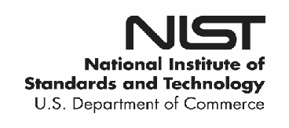

NIST Special Publication · PDF 原文抽出
Guideline for Using Cryptographic Standards in the Federal Government: Directives, Mandates and Policies
連邦政府における暗号標準の使用に関するガイドライン：指令、義務、方針
NIST SP 800-175A（Guideline for Using Cryptographic Standards in the Federal Government: Directives, Mandates and Policies）の英文と日本語訳を段落ごとに並べた閲覧用ページです。連邦政府で暗号を使用する要件を決めるため、情報保護に関する法令・指令・方針と、リスク評価の進め方を整理します。 翻訳は非公式です。要件の確認にはNIST の正式版 PDFを参照してください。
PDF から抽出した原文は原本との照合待ちです。
本文の数式はLaTeXの構造からKaTeXで表示しています。
NIST Special Publication 800-175A
NIST特別刊行物800-175A
未レビュー訳Guideline for Using
連邦政府における
未レビュー訳Cryptographic Standards in the
暗号規格の使用に関する
未レビュー訳Federal Government:
指針：
未レビュー訳Directives, Mandates and Policies
指令、義務および方針
未レビュー訳Elaine Barker William C. Barker
Elaine Barker、William C. Barker
未レビュー訳This publication is available free of charge from: http://dx.doi.org/10.6028/NIST.SP.800-175A
本刊行物は次のURLから無料で入手できます：https://doi.org/10.6028/NIST.SP.800-175A
未レビュー訳C O M P U T E R S E C U R I T Y
コンピューターセキュリティ

NIST Special Publication 800-175A
NIST特別刊行物800-175A
未レビュー訳Guideline for Using
連邦政府における
未レビュー訳Cryptographic Standards in the
暗号規格の使用に関する
未レビュー訳Federal Government:
指針：
未レビュー訳Directives, Mandates and Policies
指令、義務および方針
未レビュー訳Elaine Barker
Elaine Barker
未レビュー訳Computer Security Division Information Technology Laboratory
コンピューターセキュリティ部 情報技術研究所
未レビュー訳William C. Barker Domestic Guest Researcher
William C. Barker 客員研究員
未レビュー訳Information Technology Laboratory
情報技術研究所
未レビュー訳This publication is available free of charge from: http://dx.doi.org/10.6028/NIST.SP.800-175A
本刊行物は次のURLから無料で入手できます：http://dx.doi.org/10.6028/NIST.SP.800-175A
未レビュー訳August 2016
2016年8月
未レビュー訳U.S. Department of Commerce Penny Pritzker, Secretary
米国商務省 ペニー・プリツカー長官
未レビュー訳National Institute of Standards and Technology
国立標準技術研究所
未レビュー訳Willie May, Under Secretary of Commerce for Standards and Technology and Director
ウィリー・メイ、商務省標準技術担当次官兼所長
未レビュー訳Authority
権限
未レビュー訳This publication has been developed by NIST in accordance with its statutory responsibilities under the Federal Information Security Modernization Act of 2014, 44 U.S.C. § 3551 et seq., Public Law (P.L.) 113-283. NIST is responsible for developing information security standards and guidelines, including minimum requirements for federal information systems, but such standards and guidelines shall not apply to national security systems without the express approval of appropriate federal officials exercising policy authority over such systems. This guideline is consistent with the requirements of the Office of Management and Budget (OMB) Circular A-130.
本刊行物は、2014年連邦情報セキュリティ近代化法、合衆国法典第44編第3551条以下、公法113-283に基づく法定責任に従ってNISTが作成した。NISTは、連邦情報システムの最低要件を含む情報セキュリティ標準および指針の策定に責任を負う。ただし、国家安全保障システムを所管する適切な連邦当局者が明示的に承認しない限り、これらの標準および指針は国家安全保障システムに適用されない。本指針は、行政管理予算局（OMB）通達A-130の要件に整合する。
未レビュー訳Nothing in this publication should be taken to contradict the standards and guidelines made mandatory and binding on federal agencies by the Secretary of Commerce under statutory authority. Nor should these guidelines be interpreted as altering or superseding the existing authorities of the Secretary of Commerce, Director of the OMB, or any other federal official. This publication may be used by nongovernmental organizations on a voluntary basis and is not subject to copyright in the United States. Attribution would, however, be appreciated by NIST.
本刊行物のいかなる内容も、法定権限に基づいて商務長官が連邦機関に義務付け、拘束力を持たせた標準および指針と矛盾するものと解釈してはならない。また、本指針は、商務長官、OMB長官または他の連邦当局者の既存の権限を変更または置き換えるものと解釈してはならない。本刊行物は非政府組織も任意で使用でき、米国では著作権の対象ではない。ただし、NISTへの帰属表示が望ましい。
未レビュー訳National Institute of Standards and Technology Special Publication 800-175A Natl. Inst. Stand. Technol. Spec. Publ. 800-175A, 37 pages (August 2016) CODEN: NSPUE2
国立標準技術研究所 特別刊行物800-175A。Natl. Inst. Stand. Technol. Spec. Publ. 800-175A、37ページ（2016年8月）CODEN：NSPUE2
未レビュー訳This publication is available free of charge from: http://dx.doi.org/10.6028/NIST.SP.800-175A
本刊行物は次のURLから無料で入手できます：http://dx.doi.org/10.6028/NIST.SP.800-175A
未レビュー訳原本PDFの抜粋画像

Comments on this publication may be submitted to: National Institute of Standards and Technology Attn: Computer Security Division, Information Technology Laboratory 100 Bureau Drive (Mail Stop 8930) Gaithersburg, MD 20899-8930 Email: SP800-175@nist.gov All comments are subject to release under the Freedom of Information Act (FOIA).
本刊行物への意見は次の宛先に提出できる：国立標準技術研究所、宛先：コンピューターセキュリティ部、情報技術研究所、100 Bureau Drive（Mail Stop 8930）、Gaithersburg, MD 20899-8930、電子メール：SP800-175@nist.gov。すべての意見は情報公開法（FOIA）に基づく公開の対象となる。
未レビュー訳Reports on Computer Systems Technology
コンピューターシステム技術に関する報告書
The Information Technology Laboratory (ITL) at the National Institute of Standards and Technology (NIST) promotes the U.S. economy and public welfare by providing technical leadership for the Nation’s measurement and standards infrastructure. ITL develops tests, test methods, reference data, proof of concept implementations, and technical analyses to advance the development and productive use of information technology. ITL’s responsibilities include the development of management, administrative, technical, and physical standards and guidelines for the cost-effective security and privacy of other than national security-related information in federal information systems. The Special Publication 800-series reports on ITL’s research, guidelines, and outreach efforts in information system security, and its collaborative activities with industry, government, and academic organizations.
国立標準技術研究所（NIST）の情報技術研究所（ITL）は、米国の計測および標準インフラに技術的リーダーシップを提供することにより、米国経済および公共の福祉を促進する。ITLは、情報技術の開発と生産的利用を推進するため、試験、試験方法、参照データ、概念実証実装および技術分析を開発する。ITLの責任には、連邦情報システムにおける国家安全保障関連以外の情報の費用対効果に優れたセキュリティおよびプライバシーを実現するための管理、運用、技術および物理的な標準と指針の策定が含まれる。特別刊行物800シリーズは、情報システムセキュリティに関するITLの研究、指針、普及活動ならびに産業界、政府および学術機関との協力活動を報告する。
未レビュー訳Abstract
要旨
This document is part of a series intended to provide guidance to the Federal Government for using cryptography and NIST’s cryptographic standards to protect sensitive, but unclassified digitized information during transmission and while in storage. Special Publication (SP) 800-175A provides guidance on the determination of requirements for using cryptography. It includes a summary of laws and regulations concerning the protection of the Federal Government’s sensitive information, guidance regarding the conduct of risk assessments to determine what needs to be protected and how best to protect that information, and a discussion of the relevant security-related documents (e.g., various policy and practice documents).
本書は、伝送中および保管中の機微な非機密デジタル情報を保護するため、暗号技術およびNISTの暗号規格を使用する連邦政府向け指針シリーズの一部である。特別刊行物（SP）800-175Aは、暗号技術を使用する要件の決定に関する指針を示す。連邦政府の機微情報の保護に関する法律および規則の概要、保護対象と最適な保護方法を決定するリスク評価の実施に関する指針、ならびに関連するセキュリティ文書（各種方針・実務文書など）の説明を含む。
未レビュー訳Keywords
キーワード
未レビュー訳authentication; confidentiality; critical infrastructure; cryptographic guideline; cryptography; Executive Orders; integrity; key management; laws; mandates; policy; Presidential Directives; risk assessment; standards.
認証；機密性；重要インフラ；暗号指針；暗号技術；大統領令；完全性；鍵管理；法律；義務；方針；大統領指令；リスク評価；標準。
未レビュー訳Acknowledgments
謝辞
未レビュー訳The authors wish to thank the authors of NIST Special Publication (SP) 800-21 from which this document was derived, including Annabelle Lee, along with those colleagues that reviewed drafts of this document and contributed to its development. The authors also gratefully acknowledge and appreciate the many comments from the public and private sectors whose thoughtful and constructive comments improved the quality and usefulness of this publication.
著者らは、本書の元となったNIST特別刊行物（SP）800-21の著者（Annabelle Leeを含む）、ならびに本書の草案をレビューし策定に貢献した同僚に謝意を表する。また、本刊行物の品質および有用性を高めた、公共部門および民間部門からの熟慮された建設的な意見に対し、著者らは深く感謝する。
未レビュー訳Table of Contents
目次
SECTION 1: INTRODUCTION — 1
第1節：はじめに — 1
未レビュー訳1.1 Background and Purpose — 1
1.1 背景および目的 — 1
未レビュー訳1.2 Terms and Definitions — 1
1.2 用語および定義 — 1
未レビュー訳1.3 Acronyms — 5
1.3 略語 — 5
1.4 Document Organization — 6
1.4 文書の構成 — 6
未レビュー訳SECTION 2: APPLICABLE PUBLIC LAWS — 7
第2節：適用される公法 — 7
未レビュー訳2.1 E-Government Act of 2002 (FISMA) — 7
2.1 2002年電子政府法（FISMA） — 7
未レビュー訳2.2 Health Information Technology for Economic and Clinical Health (HITECH) Act — 9
2.2 経済的・臨床的健全性のための医療情報技術法（HITECH法） — 9
2.3 Federal Information Systems Modernization Act of 2014 — 9
2.3 2014年連邦情報システム近代化法 — 9
未レビュー訳2.4 Cybersecurity Enhancement Act of 2014 — 10
2.4 2014年サイバーセキュリティ強化法 — 10
未レビュー訳SECTION 3: EXECUTIVE DIRECTION — 12
第3節：行政指針 — 12
未レビュー訳3.1 Homeland Security Presidential Directive 7 (HSPD-7): Critical Infrastructure Identification, Prioritization, and Protection — 12
3.1 国土安全保障大統領指令7（HSPD-7）：重要インフラの特定、優先順位付けおよび保護 — 12
3.2 HSPD-12: Policies for a Common Identification Standard for Federal Employees and Contractors — 12
3.2 HSPD-12：連邦職員および請負業者の共通識別標準に関する方針 — 12
3.3 Executive Order 13636: Improving Critical Infrastructure Cybersecurity — 13
3.3 大統領令13636：重要インフラのサイバーセキュリティ向上 — 13
3.4 OMB Circular A-119: Federal Participation in the Development and Use of Voluntary Consensus Standards and in Conformity Assessment Activities — 14
3.4 OMB通達A-119：自主的コンセンサス標準の策定および使用ならびに適合性評価活動への連邦政府の参加 — 14
3.5 OMB Circular A-130: Managing Information as a Strategic Resource — 14
3.5 OMB通達A-130：戦略的資源としての情報管理 — 14
3.6 OMB Memorandum M-06-16: Protection of Sensitive Agency Information — 23
3.6 OMB覚書M-06-16：機微な機関情報の保護 — 23
3.7 OMB Memorandum M-06-18, Acquisition of Products and Services for Implementation of HSPD-12 — 24
3.7 OMB覚書M-06-18：HSPD-12実施用製品およびサービスの調達 — 24
3.8 OMB Memorandum M-07-16, Safeguarding Against and Responding to the Breach of Personally Identifiable Information — 24
3.8 OMB覚書M-07-16：個人識別情報の侵害に対する保護および対応 — 24
3.9 OMB Memorandum M-08-23: Securing the Federal Government’s Domain Name System Infrastructure (DNS) — 25
3.9 OMB覚書M-08-23：連邦政府のドメインネームシステム基盤（DNS）の保護 — 25
3.10 OMB Memorandum M-11-33: FY 2011 Reporting Instructions for the Federal Information Security Management Act and Agency Privacy Management — 26
3.10 OMB覚書M-11-33：連邦情報セキュリティマネジメント法および機関のプライバシー管理に関する2011会計年度の報告指示 — 26
3.11 OMB Memorandum M-16-03, Fiscal Year 2015-2016 Guidance on Federal Information Security and Privacy Management Requirements — 28
3.11 OMB覚書M-16-03：連邦情報セキュリティおよびプライバシー管理要件に関する2015～2016会計年度の指針 — 28
SECTION 4: ORGANIZATIONAL POLICIES — 29
第4節：組織の方針 — 29
未レビュー訳4.1 Information Management Policy — 29
4.1 情報管理方針 — 29
未レビュー訳4.2 Information Security Policy — 29
4.2 情報セキュリティ方針 — 29
4.3 Key Management Policies — 29
4.3 鍵管理方針 — 29
SECTION 5: RISK MANAGEMENT PROCESS — 31
第5節：リスク管理プロセス — 31
未レビュー訳5.1 Categorization of Information and Information Systems ................................................... 32 5.2 Selection of Security Controls ............................................................................................ 32
5.1 情報および情報システムの分類 — 32 5.2 セキュリティ管理策の選択 — 32
未レビュー訳APPENDIX A: REFERENCES.................................................................................................... 33
付録A：参考文献 — 33
未レビュー訳SECTION 1: INTRODUCTION
第1節：はじめに
1.1 Background and Purpose
1.1 背景および目的
未レビュー訳Cryptographic publications of the National Institute of Standards and Technology (NIST) provide guidance regarding how cryptographic protection is to be implemented, but do not specify when cryptographic protection is required. The decision regarding whether or not to employ cryptographic protection rests with the owner of the information to be protected. Decisions concerning the use of cryptographic protection are generally based on a thorough risk analysis that establishes the sensitivity of the information to be protected and the security controls that need to be used to protect that information, both during transmission and while in storage. This document provides guidance on the basis for determining requirements for using cryptography. It includes a summary of the laws, directives, standards, and guidelines concerning the protection of the Federal government’s sensitive but unclassified information; guidance regarding the conduct of risk assessments to determine what information needs to be protected and how best to protect that information; and a discussion of application-relevant security documentation (e.g., various policy and practice documents). While the use of this guideline outside the Federal Government is strictly voluntary, many of the processes and references included herein may be useful in non-federal contexts. The primary policy documents that apply to federal cryptographic systems include Public Laws, Presidential Executive Orders and Directives, and other guidance from Executive Office of the President organizations. Some Department of Commerce and NIST publications are identified in these policy documents as being mandatory for Federal organizations. Relevant NIST cryptographic publications are discussed in Special Publication (SP) 800-175B, Guideline for Using Cryptographic Standards in the Federal Government: Cryptographic Mechanisms.
国立標準技術研究所（NIST）の暗号関連刊行物は、暗号保護の実装方法に関する指針を示すが、暗号保護がいつ必要となるかは規定しない。暗号保護を使用するかどうかは、保護対象情報の所有者が決定する。通常、その決定は、保護対象情報の機微性と、伝送中および保管中の情報を保護するために必要なセキュリティ管理策を明らかにする徹底したリスク分析に基づく。本書は、暗号技術を使用する要件を決定する基礎について指針を示す。連邦政府の機微な非機密情報を保護する法律、指令、標準および指針の概要、保護対象情報と最適な保護方法を決定するリスク評価の実施指針、ならびにアプリケーションに関連するセキュリティ文書（各種方針および実務文書など）の説明を含む。本指針を連邦政府外で使用することは完全に任意だが、記載された多くのプロセスおよび参考文献は非連邦環境でも有用な場合がある。連邦暗号システムに適用される主な方針文書には、公法、大統領令および大統領指令、大統領府機関からのその他の指針がある。商務省およびNISTの刊行物の一部は、これらの方針文書により連邦組織に義務付けられている。本書に関連するNIST暗号刊行物は、SP 800-175B「連邦政府における暗号規格の使用に関する指針：暗号メカニズム」で説明されている。
未レビュー訳1.2 Terms and Definitions
1.2 用語および定義
Authentication
認証
未レビュー訳As used in this document, a process that provides assurance of the source and integrity of information that is communicated or stored, or that provides assurance of an entity’s identity.
本書でいう認証とは、通信または保管される情報の送信元および完全性を保証するプロセス、またはエンティティの識別情報を保証するプロセスである。
未レビュー訳Authorization
認可
未レビュー訳The official management decision given by a senior organizational official to authorize the operation of an information system and to explicitly accept the risk to organizational operations and assets, individuals, other organizations, and the Nation, based on the implementation of an agreed-upon set of security controls.
情報システムの運用を認可し、合意済みのセキュリティ管理策の実装に基づいて、組織の運用および資産、個人、他組織ならびに国に対するリスクを明示的に受け入れる、上級組織職員による正式な管理上の決定。
未レビュー訳Breach
侵害
未レビュー訳The loss of control, compromise, unauthorized disclosure, unauthorized acquisition, unauthorized access, or any similar term referring to situations where persons other than authorized users, or where authorized users take actions for an other than authorized purposes, have access or potential access to sensitive information, whether physical or electronic.
制御の喪失、侵害、不正開示、不正取得、不正アクセス、または類似の状況を指す用語。すなわち、認可された利用者以外の者が機微情報にアクセスする状況、または認可された利用者が認可されていない目的で行動し、物理的または電子的な機微情報にアクセスする、もしくはアクセスできる可能性がある状況。
未レビュー訳Categorization
分類
未レビュー訳The process of determining the security category for information or an information system. Security categorization methodologies are described in CNSS Instruction 1253 for national security systems and in FIPS Publication 199 for other than national security systems.
情報または情報システムのセキュリティカテゴリを決定するプロセス。国家安全保障システムにはCNSS指令1253、その他のシステムにはFIPS刊行物199で分類方法が説明されている。
未レビュー訳Ciphertext
暗号文
未レビュー訳Data in its encrypted form.
暗号化された形式のデータ。
未レビュー訳Confidentiality
機密性
未レビュー訳The property that sensitive information is not disclosed to unauthorized entities.
機微情報が認可されていないエンティティに開示されないという特性。
未レビュー訳Critical Infrastructure
重要インフラ
未レビュー訳The essential services that support a society and serve as the backbone for the society's economy, security and health.
社会を支え、その経済、安全および健康の基盤となる不可欠なサービス。
未レビュー訳Cryptographic algorithm
暗号アルゴリズム
未レビュー訳A well-defined computational procedure that takes variable inputs, including a cryptographic key (if applicable), and produces an output.
可変入力（該当する場合は暗号鍵を含む）を受け取り、出力を生成する、明確に定義された計算手順。
未レビュー訳Cryptographic Key
暗号鍵
未レビュー訳A parameter used in conjunction with a cryptographic algorithm that determines its operation in such a way that an entity with knowledge of the key can reproduce or reverse the operation, while an entity without knowledge of the key cannot.
暗号アルゴリズムと組み合わせて使用し、その動作を決定するパラメーター。鍵を知るエンティティはその動作を再現または逆転できるが、鍵を知らないエンティティにはできない。
未レビュー訳Cryptography
暗号技術
未レビュー訳The science of information hiding and verification. It includes the protocols, algorithms and methodologies to securely and consistently prevent unauthorized access to sensitive information and enable verifiability of the information. The main goals include confidentiality, integrity authentication and source authentication.
情報を秘匿し検証する科学。機微情報への不正アクセスを安全かつ一貫して防ぎ、情報の検証可能性を実現するプロトコル、アルゴリズムおよび方法論を含む。主な目標には機密性、完全性認証および送信元認証が含まれる。
未レビュー訳Digital Infrastructure
デジタルインフラ
未レビュー訳The Digital Infrastructure is defined as the ability to store and exchange data through a centralized communication system. Data communication and exchange are all simplified with the right software and hardware equipment. The process of transforming plaintext into ciphertext for the
デジタルインフラとは、集中通信システムを通じてデータを保存および交換する能力を指す。適切なソフトウェアおよびハードウェア機器により、データ通信と交換が簡素化される。平文を暗号文に変換する処理は、セキュリティまたはプライバシーを
未レビュー訳Encryption
暗号化
未レビュー訳purpose of security or privacy.
目的として行われる。
未レビュー訳Entity
エンティティ
未レビュー訳An individual (person), organization, device or process.
個人（人）、組織、デバイスまたはプロセス。
未レビュー訳Executive Office of the President The President's immediate staff, along with entities such as
大統領府 大統領の直属スタッフならびに、例えば
未レビュー訳the Office of Management and Budget, the National Security Staff, the Office of Science and Technology Policy, and the Office of Personnel Management.
行政管理予算局、国家安全保障スタッフ、科学技術政策局、人事管理局などの機関。
未レビュー訳Executive Orders
大統領令
未レビュー訳Legally binding orders given by the President, acting as the head of the Executive Branch, to Federal Administrative Agencies. Executive Orders are generally used to direct federal agencies and officials in their execution of congressionally established laws or policies.
行政府の長として行動する大統領が連邦行政機関に発する法的拘束力のある命令。通常、議会制定法または方針の実行を連邦機関および職員に指示するために用いられる。
未レビュー訳High Impact
高い影響度
未レビュー訳The loss of confidentiality, integrity, or availability could be expected to have a severe or catastrophic adverse effect on organizational operations, organizational assets, or individuals.
機密性、完全性または可用性の喪失により、組織の運用、組織資産または個人に深刻または壊滅的な悪影響が生じると予想される状態。
未レビュー訳Identity Management
識別情報管理
未レビュー訳Broadly refers to the administration of individual identities within a system, such as a company, a network or even a country. In enterprise IT, identity management is about establishing and managing the roles and access privileges of individual network users.
企業、ネットワーク、さらには国などのシステム内で個人の識別情報を管理することを広く指す。企業ITでは、個々のネットワーク利用者の役割およびアクセス権限を確立し管理することをいう。
未レビュー訳Integrity
完全性
未レビュー訳The property that protected data has not been modified or deleted in an unauthorized and undetected manner.
保護対象データが不正かつ未検出の方法で変更または削除されていないという特性。
未レビュー訳Key Establishment
鍵確立
未レビュー訳The procedure that results in keying material that is shared among different parties.
異なる当事者間で共有される鍵素材を生じさせる手順。
未レビュー訳Keying Material
鍵素材
未レビュー訳The data (e.g., keys) necessary to establish and maintain cryptographic keying relationships.
暗号鍵関係を確立および維持するために必要なデータ（例：鍵）。
未レビュー訳Key Management
鍵管理
未レビュー訳The activities involving the handling of cryptographic keys and other related security parameters (e.g., counters) during the entire life cycle of the keys, including the generation, storage, establishment, entry and output, and destruction.
鍵の生成、保管、確立、入力・出力、破棄を含む鍵のライフサイクル全体にわたり、暗号鍵および関連するセキュリティパラメーター（例: カウンター）を取り扱う活動。
未レビュー訳Low-Impact
低影響
未レビュー訳The loss of confidentiality, integrity, or availability could be expected to have a limited adverse effect on organizational operations, organizational assets, or individuals.
機密性、完全性、または可用性の喪失により、組織の運用、組織の資産、または個人に限定的な悪影響が生じると予想されること。
未レビュー訳Mandate
義務
未レビュー訳A mandatory order or requirement under statute.
法令に基づく強制的な命令または要件。
未レビュー訳Moderate Impact
中程度の影響
未レビュー訳The loss of confidentiality, integrity, or availability could be expected to have a serious adverse effect on organizational operations, organizational assets, or individuals.
機密性、完全性、または可用性の喪失により、組織の運用、組織の資産、または個人に深刻な悪影響が生じると予想されること。
未レビュー訳Plaintext
平文
未レビュー訳Intelligible data that has meaning and can be understood without the application of cryptography.
暗号技術を適用しなくても意味があり、理解できるデータ。
未レビュー訳Policy
方針
未レビュー訳The set of basic principles and associated guidelines, formulated and enforced by the governing body of an organization, to direct and limit its actions in pursuit of long-term goals.
組織の統治機関が策定・実施する基本原則と関連指針の集合であり、長期目標の追求に際して組織の行動を指示し、制限するもの。
未レビュー訳Presidential Directive
大統領指令
未レビュー訳A form of an executive order issued by the President of the United States with the advice and consent of the National Security Council; also known as a Presidential Decision Directive (or PDD).
国家安全保障会議の助言と同意を得て米国大統領が発する大統領令の一形態。大統領決定指令（PDD）とも呼ばれる。
未レビュー訳Reciprocity
相互承認
未レビュー訳The mutual agreement among participating organizations to accept each other’s security assessments in order to reuse information-system resources and/or to accept each other’s assessed security posture in order to share information.
参加組織が情報システム資源を再利用するため、互いのセキュリティ評価を受け入れ、または情報共有のため、相互の評価済みセキュリティ態勢を受け入れる合意。
未レビュー訳Risk Analysis
リスク分析
未レビュー訳See risk assessment.
リスク評価を参照。
未レビュー訳Risk Assessment
リスク評価
未レビュー訳The process of identifying risks to organizational operations (including mission, functions, images, and reputation), organizational assets, individuals, other organizations, and the Nation, resulting from the operation of an information system. Part of risk management, incorporates threat and vulnerability analyses, and considers mitigations provided by security controls planned or in place.
情報システムの運用に起因する、組織の運用（使命、機能、イメージ、評判を含む）、組織資産、個人、他組織、および国家へのリスクを特定するプロセス。リスク管理の一部であり、脅威分析と脆弱性分析を取り入れ、計画中または実装済みのセキュリティ管理策によるリスク軽減を考慮する。
未レビュー訳Risk Management
リスク管理
未レビュー訳The program and supporting processes to manage information security risk to organizational operations (including mission, functions, images, and reputation), organizational assets, individuals, other organizations, and the Nation, and includes: (i) establishing the context for risk-related activities, (ii) assessing risk, (iii) responding to risk once determined, and (iv) monitoring risk over time.
組織の運用（使命、機能、イメージ、評判を含む）、組織資産、個人、他組織、および国家に対する情報セキュリティリスクを管理するプログラムとそれを支えるプロセス。次を含む: (i) リスク関連活動の状況設定、(ii) リスク評価、(iii) 判定後のリスク対応、(iv) 時間経過に伴うリスク監視。
未レビュー訳Security Control
セキュリティ管理策
未レビュー訳A safeguard or countermeasure prescribed for an information system or an organization designed to protect the confidentiality, integrity, and availability of its information and to meet a set of defined security requirements.
情報システムまたは組織に対して規定される保護手段または対抗策であり、情報の機密性、完全性、可用性を保護し、定義された一連のセキュリティ要件を満たすよう設計されたもの。
未レビュー訳Security Policy
セキュリティ方針
未レビュー訳A set of criteria for the provision of security services.
セキュリティサービスを提供するための基準の集合。
未レビュー訳Security Strength
セキュリティ強度
未レビュー訳A number associated with the amount of work (that is, the number of operations) that is required to break a cryptographic algorithm or system.
暗号アルゴリズムまたはシステムを破るために必要な作業量（すなわち演算回数）に関連付けられた数値。
未レビュー訳Standard
規格
未レビュー訳A document that provides requirements, specifications, guidelines or characteristics that can be used consistently to ensure that materials, products, processes and services are fit for their purpose.
材料、製品、プロセス、サービスが目的に適合することを一貫して確保するために用いられる要件、仕様、指針、または特性を示す文書。
未レビュー訳Two-Factor Authentication
二要素認証
未レビュー訳Proof of the possession of a physical or software token in combination with some memorized secret knowledge.
物理的またはソフトウェアトークンを所有している証拠と、記憶された秘密知識を組み合わせたもの。
未レビュー訳1.3 Acronyms
1.3 略語
Chief Information Officer
最高情報責任者
未レビュー訳CIO
CIO
未レビュー訳CNSS
CNSS
未レビュー訳Committee for National Security Systems
国家安全保障システム委員会
未レビュー訳DHS
DHS
未レビュー訳Department of Homeland Security DNSSEC Domain Name System Security Extensions
国土安全保障省 DNSSEC ドメイン名システムセキュリティ拡張
未レビュー訳DOD
DOD
未レビュー訳Department of Defense
国防総省
未レビュー訳EOP
EOP
未レビュー訳Executive Office of the President
大統領府
未レビュー訳FIPS
FIPS
未レビュー訳Federal Information Processing Standard FISMA Federal Information Security Management Act (P.L. 107-347)
連邦情報処理規格 FISMA 連邦情報セキュリティマネジメント法（公法107-347）
未レビュー訳GSA
GSA
未レビュー訳General Services Administration
一般調達局
未レビュー訳HHS
HHS
未レビュー訳Health and Human Services HIPAA Health Insurance Portability and Accountability Act HITECH Health Information Technology for Economic and Clinical Health
保健福祉省 HIPAA 医療保険の相互運用性と説明責任に関する法律 HITECH 経済的・臨床的健全性のための医療情報技術法
未レビュー訳HSPD
HSPD
未レビュー訳Homeland Security Presidential Directive
国土安全保障大統領指令
未レビュー訳IC
IC
未レビュー訳Intelligence Community
情報コミュニティ
未レビュー訳IG
IG
未レビュー訳Inspector General
監察総監
未レビュー訳IT
IT
未レビュー訳Information Technology
情報技術
未レビュー訳ITL
ITL
未レビュー訳Information Technology Laboratory
情報技術研究所
未レビュー訳JTFTI
JTFTI
未レビュー訳Joint Task Force Transformation Initiative
共同タスクフォース変革イニシアティブ
未レビュー訳NIST
NIST
未レビュー訳National Institute of Standards and Technology
米国国立標準技術研究所
未レビュー訳NISTIR NIST Interagency or Internal Report NPIVP NIST Personal Identity Verification Program
NISTIR NIST省庁間・内部報告書 NPIVP NIST個人識別検証プログラム
未レビュー訳NSC
NSC
未レビュー訳National Security Council
国家安全保障会議
未レビュー訳ODNI
ODNI
未レビュー訳Office of the Director of National Intelligence
国家情報長官室
未レビュー訳OMB
OMB
未レビュー訳Office of Management and Budget
行政管理予算局
未レビュー訳OPM
OPM
未レビュー訳Office of Personnel Management
人事管理局
未レビュー訳PHI
PHI
未レビュー訳Protected Health Information
保護対象保健情報
未レビュー訳PIV
PIV
未レビュー訳Personal Identity Verification
個人識別検証
未レビュー訳PKI
PKI
未レビュー訳Public Key Infrastructure
公開鍵基盤
未レビュー訳P.L.
P.L.
未レビュー訳Public Law
公法
未レビュー訳SAOP
SAOP
未レビュー訳Senior Agency Official for Privacy
プライバシー担当上級機関職員
未レビュー訳SP
SP
未レビュー訳Special Publication
特別刊行物
未レビュー訳U.S.C. United States Code
U.S.C. 米国法典
未レビュー訳1.4 Document Organization
1.4 文書の構成
This publication is organized as follows:
本刊行物は次のように構成される:
•Section 1 provides an introduction to this document, including its background and purpose, a definition of terms, and a list of acronyms used herein.
•第1節では、本書の背景と目的、用語の定義、および本書で使用する略語一覧を含む導入を示す。
未レビュー訳•Section 2 describes legislative mandates that are relevant to the cryptographic standards and guidelines that are developed by NIST, or in the development of which NIST participates.
•第2節では、NISTが策定する、または策定に参加する暗号規格および指針に関連する立法上の義務を説明する。
未レビュー訳•Section 3 discusses directives from the Executive Office of the President (EOP) that are relevant to cryptographic standards and guidelines that are developed by NIST, or in the development of which NIST participates.
•第3節では、NISTが策定する、または策定に参加する暗号規格および指針に関連する大統領府（EOP）の指令を説明する。
未レビュー訳•Section 4 provides a brief treatment of organization-specific policies that may prescribe the cryptographic services that need to be provided and the level of protection needed.
•第4節では、提供すべき暗号サービスおよび必要な保護レベルを規定することがある、組織固有の方針を簡潔に扱う。
•Section 5 provides a brief treatment of the risk management process that determines security control requirements – including cryptographic requirements.
•第5節では、暗号要件を含むセキュリティ管理策要件を決定するリスク管理プロセスを簡潔に扱う。
•Appendix A includes a list of references.
•付録Aには参考文献一覧を含む。
SECTION 2: APPLICABLE PUBLIC LAWS
第2節: 適用される公法
This section describes elements of legislative mandates that are relevant to the cryptographic standards and guidelines that are developed by NIST, or in the development of which NIST participates.
本節では、NISTが策定する、または策定に参加する暗号標準およびガイドラインに関係する立法上の義務の要素を説明する。
2.1 E-Government Act of 2002 (FISMA)
2.1 2002年電子政府法（FISMA）
Title III of Public Law 107-347 is cited as the Federal Information Security Management Act of 2002 (FISMA) and has been incorporated into Sections 20 and 21 of the NIST Act. Paragraph 3543 of the Act provides for the Executive Office of the President to coordinate the development of standards and guidelines by the National Institute of Standards and Technology (NIST) (under Section 20 of the National Institute of Standards and Technology Act [15 U.S.C. 278g–3]) with agencies and offices operating or exercising control of national security systems (including the National Security Agency) to assure, to the maximum extent feasible, that such standards and guidelines are complementary with standards and guidelines developed for national security systems. Section 302 of the Act directs the Secretary of Commerce (under Section 11331 of Title 40 United States Code (U.S.C.)) to prescribe standards and guidelines pertaining to federal information systems, based on standards and guidelines developed by NIST. Section 302 of the Act makes these standards compulsory and binding to the extent determined necessary by the Secretary to improve the efficiency of the operation or security of federal information systems, and also states that the standards shall include information security standards that— (1) Provide minimum information security requirements as determined under Section 20(b) of the National Institute of Standards and Technology Act (15 U.S.C. 278g–3(b)); and (2) Are otherwise necessary to improve the security of federal information and information systems.
公法107-347の第III編は、2002年連邦情報セキュリティマネジメント法（FISMA）として引用され、NIST法第20条および第21条に組み込まれている。同法第3543項は、米国国立標準技術研究所（NIST）による規格・指針の策定（NIST法第20条[15 U.S.C. 278g–3]に基づく）を、国家安全保障システムを運用または管理する機関・事務所（国家安全保障局を含む）と調整し、実行可能な最大限の範囲で、それらの規格・指針が国家安全保障システム向けに策定された規格・指針と補完的なものとなるようにすることを、大統領府の役割として定める。同法第302条は、商務長官に対し、（合衆国法典（U.S.C.）第40編第11331条に基づき）NISTが策定した規格・指針に基づいて、連邦情報システムに関する規格・指針を規定するよう指示する。同法第302条は、連邦情報システムの運用効率またはセキュリティを向上させるために必要と商務長官が判断する範囲で、これらの規格を強制的かつ拘束力のあるものとし、また、規格には次の情報セキュリティ規格を含めなければならないと定める— (1) NIST法第20条(b)（15 U.S.C. 278g–3(b)）に基づき定められる情報セキュリティの最低要件を定めるもの; および (2) その他、連邦の情報および情報システムのセキュリティを向上させるために必要なもの。
Only the President is assigned the authority to disapprove or modify these standards. The heads of executive agencies may employ standards for the cost-effective information security of information systems within or under the supervision of that agency that are more stringent than the standards prescribed by the Secretary of Commerce if the more stringent standards — (1) contain at least the applicable standards made compulsory and binding by the Secretary; and (2) are otherwise consistent with policies and guidelines issued under Section 3543 of Title 44 U.S.C. Section 302 also requires that the Secretary of Commerce promulgate any standard under the section not later than six months after the submission of the proposed standard to the Secretary by NIST, as provided under Section 20 of the National Institute of Standards and Technology Act (15 U.S.C. 278g–3). Section 303 of the Act amends Section 20 of the National Institute of Standards and Technology Act (15 U.S.C. 278g–3), to require NIST to: (1) Have the mission of developing standards, guidelines, and associated methods and techniques for information systems; (2) Develop standards and guidelines, including minimum requirements, for information systems other than national security systems (as defined in Section 3542(b)(2) of Title 44, United States Code) that are used or operated by an agency or by a contractor of an agency or other organization on behalf of an agency, other than national security systems (as defined in Section 3542(b)(2) of Title 44, United States Code); and (3) Develop standards and guidelines, including minimum requirements, for providing adequate information security for all agency operations and assets; such standards and guidelines do not apply to national security systems.
これらの規格を不承認とし、または変更する権限を付与されているのは大統領のみである。行政機関の長は、当該機関内またはその監督下にある情報システムの費用対効果の高い情報セキュリティのために、商務長官が定めた規格より厳格な規格を採用できる。ただし、そのより厳格な規格が、(1) 商務長官により強制的かつ拘束力のあるものとされた適用規格を少なくとも含み、かつ (2) その他の点で合衆国法典第44編第3543条に基づき発行された方針・指針と整合する場合に限る。第302条はまた、NIST法第20条（15 U.S.C. 278g–3）の定めに従ってNISTが規格案を商務長官に提出してから6か月以内に、商務長官が同条に基づく規格を公布することを求める。同法第303条は、NIST法第20条（15 U.S.C. 278g–3）を改正し、NISTに次を求める: (1) 情報システムのための規格、指針ならびに関連する手法および技法を策定する使命を担う; (2) 機関により、または機関の請負業者もしくは機関に代わるその他の組織により使用または運用される、国家安全保障システム（合衆国法典第44編第3542条(b)(2)で定義）以外の情報システムについて、最低要件を含む規格・指針を策定する。ただし、国家安全保障システム（合衆国法典第44編第3542条(b)(2)で定義）は除く; および (3) すべての機関の運用および資産に適切な情報セキュリティを提供するため、最低要件を含む規格・指針を策定する。これらの規格・指針は国家安全保障システムには適用されない。
Section 303 requires the standards and guidelines to include, among other things: (1) Standards to be used by all agencies to categorize all information and information systems collected or maintained by or on behalf of each agency, based on the objectives of providing appropriate levels of information security according to a range of risk levels; (2) Guidelines recommending the types of information and information systems to be included in each such category; (3) Minimum information-security requirements for information and information systems in each category; and (4) A definition of and guidelines concerning the detection and handling of information-security incidents.
第303条は、規格・指針に特に次を含めるよう求める: (1) 各機関が、または各機関のために収集または維持されるすべての情報および情報システムを分類するために全機関が使用する規格。これは、さまざまなリスク水準に応じて適切なレベルの情報セキュリティを提供するという目的に基づく; (2) 各分類に含めるべき情報および情報システムの種類を推奨する指針; (3) 各分類の情報および情報システムに対する情報セキュリティの最低要件; および (4) 情報セキュリティインシデントの定義、ならびにその検知および処理に関する指針。
To the maximum extent practicable, NIST is required, by Section 303 of the Act, to: (1) Ensure that its security standards and guidelines do not require the use or procurement of specific products, including any specific hardware or software; (2) Ensure that such standards and guidelines provide for sufficient flexibility to permit alternative solutions to provide equivalent levels of protection for identified information-security risks; and (3) Use flexible, performance-based standards and guidelines that permit the use of off-the-shelf commercially developed information-security products.
同法第303条により、NISTは実行可能な最大限の範囲で次を行うことを求められる: (1) NISTのセキュリティ規格・指針が、特定の製品（特定のハードウェアまたはソフトウェアを含む）の使用または調達を要求しないようにする; (2) 特定された情報セキュリティリスクに対して同等の保護水準を提供する代替策を許容できるだけの十分な柔軟性を、それらの規格・指針に持たせる; および (3) 市販の商用開発された情報セキュリティ製品を使用できる、柔軟な性能ベースの規格・指針を用いる。
Among other requirements of Section 303 of the Act, NIST is required to: (1) Submit standards developed to the Secretary of Commerce for promulgation under Section 11331 of Title 40, United States Code, along with recommendations as to the extent to which these standards should be made compulsory and binding; (2) Provide technical assistance to agencies, upon request, regarding complying with the standards and guidelines, detecting and handling information-security incidents, and information-security policies, procedures, and practices; (3) Conduct research, as needed, to determine the nature and extent of information-security vulnerabilities and techniques for providing cost-effective information security; (4) Develop and periodically revise performance indicators and measures for agency information-security policies and practices; (5) Evaluate private-sector information-security policies and practices and commercially available information technologies to assess the potential application by agencies to strengthen information security;
同法第303条のその他の要件として、NISTは次を行うことを求められる: (1) 合衆国法典第40編第11331条に基づく公布のため、策定した規格を商務長官に提出し、あわせて、これらの規格をどの程度まで強制的かつ拘束力のあるものとすべきかについて勧告する; (2) 規格・指針への準拠、情報セキュリティインシデントの検知および処理、ならびに情報セキュリティの方針、手順および実務に関し、要請に応じて機関に技術支援を行う; (3) 情報セキュリティ脆弱性の性質と範囲、および費用対効果の高い情報セキュリティを提供する技法を判断するため、必要に応じて調査を行う; (4) 機関の情報セキュリティ方針・実務に関する性能指標および測定方法を策定し、定期的に改訂する; (5) 民間部門の情報セキュリティ方針・実務および市販の情報技術を評価し、機関が情報セキュリティを強化するために適用できる可能性を見極める;
(6) Assist the private sector, upon request, in using and applying the results of activities under this section; (7) Evaluate security policies and practices developed for national security systems to assess the potential for application by agencies to strengthen information security; and (8) Periodically assess the effectiveness of standards and guidelines developed under this section and undertake revisions, as appropriate.
(6) 要請に応じて、民間部門が本条に基づく活動の成果を使用・適用するのを支援する; (7) 国家安全保障システム向けに策定されたセキュリティ方針・実務を評価し、機関が情報セキュリティ強化に適用できる可能性を評価する; および (8) 本条に基づき策定された規格・指針の有効性を定期的に評価し、必要に応じて改訂する。
未レビュー訳2.2 Health Information Technology for Economic and Clinical Health (HITECH)
2.2 経済的・臨床的健全性のための医療情報技術（HITECH）
未レビュー訳Act
法
未レビュー訳The Health Information Technology for Economic and Clinical Health (HITECH) Act of 2009 is an example of sector-specific legislation that provides for the encryption of information using NIST standards. The HITECH Act was enacted, as Title XIII of the American Recovery and Reinvestment Act of 2009, to promote the adoption and meaningful use of health information technology. Subtitle D of the HITECH Act addresses the privacy and security concerns associated with the electronic transmission of health information, in part, through several provisions that strengthen the civil and criminal enforcement of the rules enacted by the Health Insurance Portability and Accountability Act (HIPAA) of 19961. The HITECH Act mandates the notification of a breach of unsecured protected health information (PHI), but provided that breaches do not have to be reported if the data involved is rendered unreadable via encryption2.
2009年経済的・臨床的健全性のための医療情報技術（HITECH）法は、NIST規格を用いた情報の暗号化を定める分野別法の例である。HITECH法は、医療情報技術の導入と実質的な利用を促進するため、2009年米国再生・再投資法第XIII編として制定された。同法D副編は、1996年医療保険の相互運用性と説明責任に関する法律（HIPAA）に基づく規則の民事・刑事執行を強化する複数の規定などを通じ、医療情報の電子伝送に関わるプライバシーとセキュリティの懸念に対処する。¹ HITECH法は保護対象保健情報（PHI）のセキュリティ保護されていない侵害の通知を義務付けるが、暗号化によりデータが読めない状態にされていれば侵害を報告する必要はないとしている。²
未レビュー訳2.3 Federal Information Systems Modernization Act of 2014
2.3 2014年連邦情報システム近代化法
The Federal Information Systems Modernization Act of 2014 moves some of the Office of Management and Budget (OMB) responsibilities mandated by the Federal Information Security Management Act of 2002 from the Director of the Office of Management and Budget to the Secretary for Homeland Security. Paragraph 3553 requires the Secretary for Homeland Security to: (1) Coordinate the development of standards and guidelines by NIST (under Section 20 of the National Institute of Standards and Technology Act (15 U.S.C. 278g-3)) with agencies and offices operating or exercising control of national security systems (including the National Security Agency) to assure, to the maximum extent feasible, that such standards and guidelines are complementary with standards and guidelines developed for national security systems;
2014年連邦情報システム近代化法は、2002年連邦情報セキュリティマネジメント法が行政管理予算局（OMB）に課していた責任の一部を、行政管理予算局長から国土安全保障長官へ移す。第3553項は国土安全保障長官に次を求める: (1) NISTによる規格・指針の策定（NIST法第20条（15 U.S.C. 278g-3）に基づく）を、国家安全保障システムを運用または管理する機関・事務所（国家安全保障局を含む）と調整し、実行可能な最大限の範囲で、それらの規格・指針が国家安全保障システム向けに策定された規格・指針と補完的なものとなるようにする;
(2) Coordinate Government-wide efforts on information security policies and practices, including consultation with the Chief Information Officers Council (established under Section 3603 of the Act) and the Director of NIST; (3) Develop and oversee the implementation of binding operational directives for agencies to implement the policies, principles, standards, and guidelines developed by the Department of Homeland Security (DHS), and consider any applicable standards or guidelines developed by NIST and issued by the Secretary of Commerce under Section 11331 of Title 40; (4) Consult with the Director of NIST regarding any binding operational directive issued by DHS that implements standards and guidelines developed by NIST; and (5) Ensure that the binding operational directives do not conflict with the standards and guidelines issued under Section 11331 of Title 40. Paragraph 3553 of the Act also provides that nothing in the subchapter is to be construed as authorizing the Secretary for Homeland Security to direct the Secretary of Commerce in the development and promulgation of standards and guidelines under Section 11331 of Title 40; and that nothing in this subchapter, (Section 11331 of Title 40), or Section 20 of the National Standards and Technology Act (15 U.S.C. 278g-3) may be construed as affecting the authority of the President, the Office of Management and Budget or the Director thereof, the National Institute of Standards and Technology, or the head of any agency, with respect to the authorized use or disclosure of information, including information related to the protection of personal privacy under Title 5 or Title 44 U.S.C.
(2) 最高情報責任者会議（同法第3603条に基づき設置）およびNIST局長と協議し、政府全体の情報セキュリティ方針・実務の取り組みを調整する; (3) 国土安全保障省（DHS）が策定した方針、原則、規格、指針を機関が実施するための拘束力ある運用指令を策定し、その実施を監督する。また、NISTが策定し、合衆国法典第40編第11331条に基づき商務長官が発行した適用可能な規格・指針を考慮する; (4) NISTが策定した規格・指針を実施するDHSの拘束力ある運用指令についてNIST局長と協議する; および (5) 拘束力ある運用指令が合衆国法典第40編第11331条に基づき発行された規格・指針と矛盾しないようにする。同法第3553項はさらに、本副章のいかなる規定も、国土安全保障長官に対し、合衆国法典第40編第11331条に基づく規格・指針の策定・公布について商務長官を指揮する権限を与えるものと解釈してはならないと定める。また、本副章、同条、またはNIST法第20条（15 U.S.C. 278g-3）のいかなる規定も、合衆国法典第5編または第44編に基づく個人プライバシー保護関連情報を含む情報の使用・開示に関し、大統領、OMBまたはその局長、NIST、もしくは各機関の長の権限に影響するものと解釈してはならない。
未レビュー訳2.4 Cybersecurity Enhancement Act of 2014
2.4 2014年サイバーセキュリティ強化法
The Cybersecurity Enhancement Act of 2014 extends NIST’s security standards activity to include direct support to the private sector. The security standards’ responsibility extension includes cryptographic standards. This extension is significant in that it specifically authorizes cybersecurity support for organizations outside the U.S. Federal government. Specifically, the Act’s Title I: Public-Private Collaboration on Cybersecurity - (Sec. 101) amends the National Institute of Standards and Technology Act to permit the Secretary of Commerce, acting through the Director of NIST, to facilitate and support the development of a voluntary, consensus-based, industry-led set of standards and procedures to cost-effectively reduce cyber risks to a critical infrastructure. The Act requires the NIST Director, in carrying out such activities, to: (1) Coordinate regularly with, and incorporate the industry expertise of, relevant private-sector personnel and entities, critical infrastructure owners and operators, sector-coordinating councils, Information Sharing and Analysis Centers, and other relevant
2014年サイバーセキュリティ強化法は、NISTのセキュリティ規格活動を民間部門への直接支援に拡大する。この責任拡大には暗号規格も含まれる。米国連邦政府外の組織に対するサイバーセキュリティ支援を明示的に認める点で重要である。具体的には、同法第I編「サイバーセキュリティに関する官民連携」（第101条）はNIST法を改正し、商務長官がNIST局長を通じて、重要インフラのサイバーリスクを費用対効果の高い方法で低減する、自主的で合意に基づく業界主導の規格・手順群の策定を促進・支援することを認める。同法はNIST局長に、これらの活動の実施にあたり次を求める: (1) 関係する民間部門の人員・組織、重要インフラの所有者・運用者、分野別調整協議会、情報共有分析センター、およびその他の関係業界団体と定期的に調整し、その専門知識を取り入れる;
未レビュー訳industry organizations; (2) Consult with the heads of agencies with national security responsibilities, sector-specific agencies, state and local governments, governments of other nations, and international organizations; (3) Identify a prioritized, flexible, repeatable, performance-based, and cost-effective approach, including information-security measures and controls, that may be voluntarily adopted by owners and operators of a critical infrastructure to help identify, assess, and manage cyber risks; and (4) Include methodologies to mitigate impacts on business confidentiality, protect individual privacy and civil liberties, incorporate voluntary consensus standards and industry best practices, align with international standards, and prevent duplication of regulatory processes. However, the Act prohibits the Director from prescribing a specific solution or requiring that
(2) 国家安全保障を担う機関、分野別機関、州・地方政府、他国政府、国際機関の長と協議する; (3) 重要インフラの所有者・運用者がサイバーリスクの特定、評価、管理に役立てるため自主採用できる、優先順位付けされた柔軟で再現可能な性能ベースかつ費用対効果の高いアプローチ（情報セキュリティ対策・管理策を含む）を特定する; および (4) 事業機密への影響の緩和、個人のプライバシーと市民的自由の保護、自主的合意規格と業界のベストプラクティスの導入、国際規格との整合、規制プロセスの重複防止の方法論を含める。ただし同法は、局長が特定の解決策を定めたり、
未レビュー訳products or services be designed or manufactured in a particular manner, and it prohibits information provided to NIST for purposes of developing cyber-risk standards from being used by federal, state, tribal, or local agencies to regulate the activity of any entity. The Act’s Title II: Cybersecurity Research and Development - (Sec. 201) directs agencies to build upon existing programs to meet cybersecurity objectives, such as how to: (1) Guarantee individual privacy, verify third-party software and hardware, and address
製品またはサービスを特定の方法で設計・製造するよう要求したりすることを禁じる。また、サイバーリスク規格の策定目的でNISTに提供された情報を、連邦、州、部族、地方機関がいずれかの組織の活動を規制するために使用することも禁じる。同法第II編「サイバーセキュリティの研究開発」（第201条）は、サイバーセキュリティ目標を達成する既存プログラムを基盤として、例えば次の方法を扱うよう各機関に指示する: (1) 個人のプライバシーを保証し、第三者のソフトウェアおよびハードウェアを検証し、対処する
未レビュー訳insider threats; (2) Determine the origin of messages transmitted over the Internet; and (3) Protect information stored using cloud computing or transmitted through wireless services. Title II also requires agencies to describe how they will focus on technologies to protect consumer privacy and enhance the security, reliability, resilience, and trustworthiness of the
内部関係者の脅威に対処すること、(2) インターネット経由で送信されたメッセージの送信元を特定すること、(3) クラウドコンピューティングを用いて保存する情報または無線サービス経由で送信する情報を保護すること。第II編はまた、消費者のプライバシーを保護し、デジタルインフラストラクチャのセキュリティ、信頼性、レジリエンスおよび信頼性を高める技術に、各機関がどのように注力するかを説明するよう求めている。
未レビュー訳digital infrastructure. The Act’s Title V: Advancement of Cybersecurity Technical Standards - (Sec. 502) requires NIST to ensure the coordination of federal agencies engaged in the development of international technical standards related to information system security and instructs NIST to ensure consultation with appropriate private-sector stakeholders. Section 503 of the Act requires consideration to be given to activities that support (in consultation with the private sector) the development of appropriate security frameworks and reference materials, and the identification of best practices, for federal agencies to use in addressing security and privacy requirements. Section 504 of the Act requires NIST to continue a program to support the development of voluntary and cost-effective technical standards, metrology, testbeds, and conformance criteria with regard to identity management research and development.
デジタルインフラストラクチャ。法律の第V編「サイバーセキュリティ技術標準の推進」（第502条）は、情報システムセキュリティに関する国際技術標準の策定に関与する連邦機関間の調整をNISTが確保することを求め、民間部門の適切な関係者との協議を確保するようNISTに指示している。同法第503条は、連邦機関がセキュリティおよびプライバシー要件に対処する際に利用する適切なセキュリティフレームワークおよび参考資料の策定を支援する活動や、ベストプラクティスの特定について、民間部門と協議の上で検討することを求めている。同法第504条は、ID管理の研究開発に関して、自主的で費用対効果の高い技術標準、計測標準、テストベッドおよび適合性基準の策定を支援するプログラムをNISTが継続することを求めている。
未レビュー訳SECTION 3: EXECUTIVE DIRECTION
第3節：大統領府の指示
This section describes directives from the Executive Office of the President (EOP) that are relevant to cryptographic standards and guidelines that are developed by NIST, or in the development of which NIST participates.
本節では、NISTが策定する、または策定に参加する暗号標準およびガイドラインに関連する大統領府（EOP）の指示について説明する。
3.1 Homeland Security Presidential Directive 7 (HSPD-7): Critical Infrastructure
3.1 国土安全保障大統領指令第7号（HSPD-7）：重要インフラの特定、優先順位付けおよび保護
未レビュー訳Identification, Prioritization, and Protection
特定、優先順位付けおよび保護
未レビュー訳HSPD-7 establishes a national policy for federal departments and agencies to identify and prioritize United States critical infrastructure and key resources and to protect them from terrorist attacks. The Directive directs the Department of Commerce, in coordination with the Department for Homeland Security, to work with the private sector, research, academic, and government organizations to improve technology for cyber systems and promote other critical infrastructure efforts, including using its authority under the Defense Production Act3 to assure the timely availability of industrial products, materials, and services to meet homeland security requirements.
HSPD-7は、米国の重要インフラおよび主要資源を特定して優先順位を付け、テロ攻撃から保護するための連邦省庁・機関向け国家方針を定める。同指令は商務省に対し、国土安全保障省と連携して、民間部門、研究機関、学術機関および政府機関と協力し、サイバーシステム技術を改善し、その他の重要インフラ施策を推進するよう指示している。これには、国土安全保障上の要件を満たすために産業製品、資材およびサービスを適時に利用可能にするため、国防生産法3に基づく権限を行使することが含まれる。
未レビュー訳3.2 HSPD-12: Policies for a Common Identification Standard for Federal
3.2 HSPD-12：連邦職員および請負業者の共通識別標準に関する方針
未レビュー訳Employees and Contractors
職員および請負業者
未レビュー訳This directive mandates the development of a federal standard for secure and reliable forms of identification. HSPD-12 directs the Secretary of Commerce to promulgate, in accordance with applicable laws, a federal standard for secure and reliable forms of identification in consultation with the Secretary of State, the Secretary of Defense, the Attorney General, the Secretary of Homeland Security, the Director of the Office of Management and Budget (OMB), and the Director of the Office of Science and Technology Policy. The Secretary of Commerce is directed to periodically review the Standard and update the Standard, as appropriate, in consultation with the affected agencies. For purposes of this directive, "Secure and reliable forms of identification" means identification that: (a) Is issued, based on sound criteria for verifying an individual employee's identity; (b) Is strongly resistant to identity fraud, tampering, counterfeiting, and terrorist exploitation; (c) Can be rapidly authenticated electronically; and (d) Is issued only by providers whose reliability has been established by an official accreditation process. The Standard to be developed is directed to include graduated criteria, from least secure to most secure, to ensure flexibility in selecting the appropriate level of security for each application.
この指令は、安全で信頼性の高い身分証明方式に関する連邦標準の策定を義務付ける。HSPD-12は商務長官に対し、国務長官、国防長官、司法長官、国土安全保障長官、行政管理予算局（OMB）局長および科学技術政策局長と協議の上、適用法に従って、安全で信頼性の高い身分証明方式に関する連邦標準を公布するよう指示する。商務長官は、影響を受ける機関と協議の上、定期的に標準を見直し、適宜更新するよう指示されている。この指令において「安全で信頼性の高い身分証明方式」とは、次の身分証明を意味する: (a) 職員個人の身元を検証するための適切な基準に基づいて発行される; (b) なりすまし、改ざん、偽造およびテロリストによる悪用に対して強い耐性がある; (c) 電子的に迅速に認証できる; および (d) 公式な認定プロセスによって信頼性が確立された提供者のみが発行する。策定する標準には、各アプリケーションに適切なセキュリティレベルを柔軟に選択できるよう、最も安全性の低いものから最も高いものまで段階的な基準を含めるよう指示されている。
3.3 Executive Order 13636: Improving Critical Infrastructure Cybersecurity
3.3 大統領令第13636号：重要インフラのサイバーセキュリティ強化
未レビュー訳Section 7 of Executive Order 13636, titled “Baseline Framework to Reduce Cyber Risk to Critical Infrastructure,” requires the Secretary of Commerce to direct the Director of NIST to lead the development of a framework to reduce cyber risks to critical infrastructures (the Cybersecurity Framework). The Cybersecurity Framework was required to:
「重要インフラのサイバーリスクを低減するためのベースラインフレームワーク」と題する大統領令第13636号第7節は、商務長官に対し、重要インフラのサイバーリスクを低減するフレームワーク（サイバーセキュリティフレームワーク）の策定をNIST長官に主導させるよう求める。このフレームワークには次が求められた。
•Include a set of standards, methodologies, procedures, and processes that align policy, business, and technological approaches to address cyber risks;
•サイバーリスクに対処するため、方針、業務および技術的アプローチを整合させる一連の標準、方法論、手順およびプロセスを含むこと。
未レビュー訳•Incorporate voluntary consensus standards and industry best practices to the fullest extent possible;
•可能な限り、自主的なコンセンサス標準および業界のベストプラクティスを取り入れること。
•Be consistent with voluntary international standards when such international standards will advance the objectives of this order; and
•国際標準が本令の目的を促進する場合には、自主的な国際標準と整合すること。
•Meet the requirements of the National Institute of Standards and Technology Act, as amended (15 U.S.C. 271 et seq.), the National Technology Transfer and Advancement Act of 1995 (Public Law 104-113), and OMB Circular A-119, as revised.
•改正後のNIST法（合衆国法典第15編第271条以降）、1995年国家技術移転・促進法（公法104-113）および改訂後のOMB通達A-119の要件を満たすこと。
The Cybersecurity Framework was required to:
サイバーセキュリティフレームワークには、さらに次が求められた。
•Provide a prioritized, flexible, repeatable, performance-based, and cost-effective approach, including information security measures and controls;
•情報セキュリティ対策および管理策を含む、優先順位付けされた、柔軟で、反復可能かつ成果ベースの費用対効果の高いアプローチを提供すること。
•Help owners and operators of critical infrastructures identify, assess, and manage cyber risk;
•重要インフラの所有者および運用者がサイバーリスクを特定、評価、管理するのを支援すること。
未レビュー訳•Focus on identifying cross-sector security standards and guidelines applicable to the critical infrastructure;
•重要インフラに適用可能な分野横断的セキュリティ標準およびガイドラインの特定に重点を置くこと。
•Identify areas for improvement that should be addressed through future collaboration with particular sectors and standards-developing organizations;
•特定の分野および標準策定機関との今後の協力を通じて対処すべき改善領域を特定すること。
•In order to enable technical innovation and account for organizational differences, to provide guidance that is technology neutral and that enables critical infrastructure sectors to benefit from a competitive market for products and services that meet the standards, methodologies, procedures, and processes developed to address cyber risks; and
•技術革新を可能にし、組織ごとの差異を考慮するため、技術中立の指針を提供し、サイバーリスク対処のために策定された標準、方法論、手順およびプロセスを満たす製品・サービスの競争市場から重要インフラ分野が便益を得られるようにすること。
•Include guidance for measuring the performance of an entity in implementing the Cybersecurity Framework.
•エンティティによるサイバーセキュリティフレームワーク実施状況の測定に関する指針を含めること。
The Cybersecurity Framework was also required to include methodologies to identify and mitigate impacts of the Cybersecurity Framework and associated information-security measures or controls on business confidentiality, and to protect individual privacy and civil liberties. In developing the Cybersecurity Framework, NIST was directed to engage in an open public review and comment process. The Director is also required to consult with the Secretary for Homeland Security, the National Security Agency, Sector-Specific agencies and other interested agencies, including OMB, owners and operators of critical infrastructure, and other stakeholders.
また、同フレームワークには、事業上の機密性に対する影響を特定・緩和する方法論、および個人のプライバシーと市民的自由を保護する方法論を含める必要があった。策定にあたり、NISTは公開の審査・意見募集プロセスを実施するよう指示された。長官は、国土安全保障長官、国家安全保障局、分野別機関その他の関係機関（OMBを含む）、重要インフラの所有者および運用者、その他の関係者とも協議する必要がある。
未レビュー訳3.4 OMB Circular A-119: Federal Participation in the Development and Use of
3.4 OMB通達A-119：自主的コンセンサス標準の策定・利用および適合性評価活動への連邦政府の参加
未レビュー訳Voluntary Consensus Standards and in Conformity Assessment Activities OMB Circular A-119 establishes policies on the Federal use and development of voluntary consensus standards and on conformity assessment activities. Public Law 104-113, the "National Technology Transfer and Advancement Act of 1995," codified existing policies in A-119, established reporting requirements, and authorized the National Institute of Standards and Technology to coordinate conformity assessment activities of the agencies. OMB is issuing this revision of the Circular in order to:
自主的コンセンサス標準ならびに適合性評価活動 OMB通達A-119は、自主的コンセンサス標準の連邦政府による利用および策定、ならびに適合性評価活動に関する方針を定める。公法104-113「1995年国家技術移転・促進法」は、A-119の既存方針を法典化し、報告要件を定め、機関の適合性評価活動を調整する権限を米国国立標準技術研究所に与えた。OMBは次の目的でこの通達の改訂版を発行する:
•Make the terminology of the Circular consistent with the National Technology Transfer and Advancement Act of 1995,
•通達の用語を1995年国家技術移転・促進法と整合させる。
•Issue guidance to the agencies on making their reports to OMB,
•OMBへの報告書作成に関する指針を機関に示す。
•Direct the Secretary of Commerce to issue policy guidance for conformity assessment, and
•商務長官に適合性評価の方針指針を発行させる。
未レビュー訳•Make changes for clarity.
•明確性のための変更を行う。
3.5 OMB Circular A-130: Managing Information as a Strategic Resource
3.5 OMB通達A-130：戦略的資源としての情報管理
未レビュー訳Office of Management and Budget Circular A-1304 establishes general policy for the planning, budgeting, governance, acquisition, and management of Federal information, personnel, equipment, funds, IT resources and supporting infrastructure and services. The appendices to this Circular also include responsibilities for protecting Federal information resources and managing personally identifiable information (PII). The requirements of this Circular apply to the information resources management activities of all agencies of the Executive Branch of the Federal Government. The requirements of Circular A-130 apply to management activities concerning all information resources in any medium (unless otherwise noted), including paper and electronic information. When an agency acts as a service provider, the ultimate responsibility for compliance with applicable requirements of this Circular is not shifted (to the service provider). Agencies are required to describe the responsibilities of service providers in relevant agreements with the service providers. Agencies are not required to apply this Circular to national security systems (defined in 44 U.S.C. § 35525), but are encouraged to do so where appropriate. For national security systems, agencies shall follow applicable statutes, executive orders, directives, and internal agency policies. Unlike most other cybersecurity-related directives and mandates, Circular A-130 does impose specific requirements for encryption and digital signatures. The following material identifies particularly salient requirements associated with cryptography and the underlying risk management determinations. Within each subsection below, paragraph numbers associated with lists are preserved from the Circular in order to facilitate reference.
行政管理予算局（OMB）通達A-1304は、連邦政府の情報、職員、設備、資金、IT資源ならびにそれらを支えるインフラストラクチャおよびサービスの計画、予算編成、ガバナンス、調達および管理に関する一般方針を定める。同通達の付属書には、連邦政府情報資源の保護と個人識別可能情報（PII）の管理に関する責任も含まれる。同通達の要件は、連邦政府行政府のすべての機関による情報資源管理活動に適用される。別段の記載がない限り、紙媒体と電子情報を含め、あらゆる媒体の情報資源に関する管理活動に適用される。機関がサービス提供者として行動する場合でも、通達の適用要件を遵守する最終責任はサービス提供者に移転しない。機関は、関連する契約等でサービス提供者の責任を明記する必要がある。機関は国家安全保障システム（合衆国法典第44編第3552条5で定義）に本通達を適用する義務はないが、適切な場合は適用が推奨される。国家安全保障システムについては、適用法令、大統領令、指令および機関内部方針に従わなければならない。他のサイバーセキュリティ関連指令・義務の多くとは異なり、通達A-130は暗号化およびデジタル署名に関する具体的要件を定める。以下では、暗号技術およびその基礎となるリスク管理上の判断に特に関連する要件を示す。各小節では、参照しやすいよう、通達にある箇条書きの段落番号を維持する。
未レビュー訳3.5.1 Privacy And Information Security Provisions
3.5.1 プライバシーおよび情報セキュリティ規定
Section 5, “Policy,” subparagraph f, “Privacy and Information Security,” subparagraph 2), “Information Security,” requires agencies to provide proper safeguards to:
第5節「方針」小項目f「プライバシーおよび情報セキュリティ」第2項「情報セキュリティ」は、機関に次の適切な保護措置を講じるよう求める。
未レビュー訳a) Ensure that the CIO designates a senior agency information security officer to develop and maintain an agency-wide information security program in accordance with the Federal Information Security Modernization Act of 2014;
a) CIOが、2014年連邦情報セキュリティ近代化法に従って機関全体の情報セキュリティプログラムを策定・維持する上級情報セキュリティ責任者を指名することを確保する。
未レビュー訳b) Protect information in a manner commensurate with the risk that would result from unauthorized access, use, disclosure, disruption, modification, or destruction of such information; and
b) 情報への不正アクセス、使用、開示、中断、改変または破壊によって生じ得るリスクに見合った方法で情報を保護する。
未レビュー訳c) Implement security policies issued by OMB, as well as requirements issued by the Department of Commerce, the Department of Homeland Security (DHS), the General Services Administration (GSA), and the Office of Personnel Management (OPM). This includes applying the standards and guidelines contained in the NIST FIPS, NIST SPs (e.g., 800 series guidelines), and where appropriate and directed by OMB, NIST Interagency or Internal Reports (NISTIRs).6
c) OMBが発行するセキュリティ方針と、商務省、国土安全保障省（DHS）、一般調達局（GSA）および人事管理局（OPM）が発行する要件を実施する。これには、NIST FIPS、NIST SP（例えば800シリーズのガイドライン）に含まれる標準とガイドライン、ならびに適切な場合にOMBが指示するNIST機関間報告書または内部報告書（NISTIR）を適用することが含まれる。6
未レビュー訳3.5.2 Electronic Signature Provisions
3.5.2 電子署名規定
未レビュー訳Section 5, “Policy,” subparagraph g, “Electronic Signatures,” subparagraph 3), “Information Security,” requires agencies to: 1) Allow individuals or entities that deal with the agencies the option to submit information or transact with the agency electronically, when practicable, and for agencies to maintain records electronically, when practicable. Electronic records and their related electronic signatures are not to be denied legal effect, validity, or enforceability merely because they are in electronic form;
第5節「方針」小項目g「電子署名」第3項「情報セキュリティ」は、機関に次を求める。1) 実行可能な場合、機関と取引する個人またはエンティティが情報を電子的に提出し、機関と電子的に取引できる選択肢を認め、機関が実行可能な場合に記録を電子的に維持する。電子記録および関連する電子署名は、電子形式であるという理由だけで法的効力、有効性または執行可能性を否定されてはならない。
未レビュー訳2) Promote the use of electronic contract formation, signatures, and recordkeeping in private commerce by establishing legal equivalence between: contracts written on paper and contracts in electronic form; pen-and-ink signatures and electronic signatures; and other legally required written documents (termed “records”) and the same information in electronic form; and
2) 次の間に法的同等性を確立し、民間商取引における電子契約の締結、署名および記録管理の利用を促進する。紙に記載された契約と電子形式の契約、ペンによる署名と電子署名、ならびに法的に必要とされるその他の書面（「記録」と呼ぶ）と同一情報の電子形式。
未レビュー訳3) Develop and implement processes to support use of digital signatures, a form of electronic signature, for employees and contractors.
3) 職員および請負業者が電子署名の一形態であるデジタル署名を利用できるよう支援するプロセスを策定・実施する。
3.5.3 Government-wide Responsibilities
3.5.3 政府全体の責任
The following provisions are directed by Section 6, “Government-wide Responsibilities.” a. Department of Commerce
以下の規定は第6節「政府全体の責任」によって指示されている。a. 商務省
未レビュー訳The Secretary of Commerce shall:
商務長官は次を行わなければならない。
未レビュー訳1) Develop and issue standards and guidelines for the security and privacy of information in Federal information systems and systems which create, collect, Federal Government; process, store, transmit, disseminate, or dispose of information on behalf of the Federal Government; 7
1) 連邦政府のために情報を作成、収集、処理、保存、送信、配布または廃棄する連邦情報システムおよびシステムの情報セキュリティとプライバシーに関する標準とガイドラインを策定・発行する。7
未レビュー訳2) Provide OMB and the agencies with scientific and technical advisory services relating to the development and use of IT;8
2) ITの開発および利用に関して、OMBおよび各機関に科学技術上の助言サービスを提供する。8
未レビュー訳3) Conduct studies and evaluations concerning telecommunications technology, and the improvement, expansion, testing, operation, and use of Federal telecommunications systems, and advise the Director of OMB and appropriate agencies of the recommendations that result from such studies;
3) 電気通信技術ならびに連邦電気通信システムの改善、拡張、試験、運用および利用に関する調査・評価を実施し、その結果得られた勧告をOMB局長および適切な機関に助言する。
4) Develop, in consultation with the Secretary of State and the Director of OMB, plans, policies, and programs relating to international telecommunications issues affecting Federal information activities;
4) 国務長官およびOMB局長と協議し、連邦政府の情報活動に影響する国際電気通信問題に関する計画、方針およびプログラムを策定する。
5) Identify needs for standardization of telecommunications and information processing technology, and develop standards, in consultation with the Secretary of Defense and the Administrator of General Services, to ensure efficient application of such technology;9
5) 電気通信および情報処理技術の標準化ニーズを特定し、その技術を効率的に適用するため、国防長官および一般調達局長官と協議して標準を策定する。9
未レビュー訳6) Ensure that the Federal Government is represented in the development of national and international (in consultation with the Secretary of State) IT standards, and advise the Director of OMB on such activities;10
6) 連邦政府が国内および国際的なIT標準の策定に代表者を参加させることを確保し（国務長官と協議）、その活動についてOMB局長に助言する。10
未レビュー訳7) Evaluate new information technologies to assess their security vulnerabilities, with technical assistance from the Department of Defense (DOD) and DHS;
7) 国防総省（DOD）およびDHSの技術的支援を得て、新しい情報技術のセキュリティ脆弱性を評価する。
9) Lead the development of a Cybersecurity Framework to reduce cyber risks to critical infrastructure pursuant to Executive Order 13636, Improving Critical Infrastructure Cybersecurity.
9) 大統領令第13636号「重要インフラのサイバーセキュリティ強化」に従って、重要インフラのサイバーリスクを低減するサイバーセキュリティフレームワークの策定を主導する。
3.5.4 General Requirements for Protecting and Managing Federal Information Resources
3.5.4 連邦政府情報資源の保護・管理に関する一般要件
Appendix I, “Responsibilities for Protecting and Managing Federal Information Resources,” under Section 3, “General Requirements,” directs that:
付属書I「連邦政府情報資源の保護および管理に関する責任」第3節「一般要件」は次を指示する。
未レビュー訳7 National Institute of Standards and Technologies (NIST) Act, 15 U.S.C. § 278g-3. 8 Pursuant to the NIST Act (15 U.S.C. § 278g-3). 9 Pursuant to the NIST Act, 15 U.S.C. §§ 272(b), 278g-3, and OMB A-119, Federal Participation in the Development and Use of Voluntary Consensus Standards and in Conformity Assessment Activities. 10 Pursuant to NIST Act, 15 U.S.C. §§ 272(b), 273, 278g–3 and OMB A-119, Federal Participation in the Development and Use of Voluntary Consensus Standards and in Conformity Assessment Activities. a. Agencies shall implement an agency-wide risk management process that frames, assesses, responds to, and monitors information security and privacy risk on an ongoing basis across the three organizational tiers (i.e., organization level, mission or business process level, and information system level).11 b. [Omitted from this publication as being out of scope.]
7 国家標準技術研究所（NIST）法、合衆国法典第15編第278g-3条。8 NIST法（合衆国法典第15編第278g-3条）に基づく。9 NIST法（合衆国法典第15編第272条(b)、第278g-3条）およびOMB通達A-119「自主的コンセンサス標準の策定・利用および適合性評価活動への連邦政府の参加」に基づく。10 NIST法（合衆国法典第15編第272条(b)、第273条、第278g-3条）およびOMB通達A-119に基づく。a. 機関は、3つの組織階層（組織レベル、任務または業務プロセスレベル、情報システムレベル）全体にわたり、情報セキュリティおよびプライバシーのリスクを継続的に枠組み化、評価、対応、監視する機関全体のリスク管理プロセスを実施しなければならない。11 b. [本刊行物の適用範囲外のため省略。]
未レビュー訳c. Agencies that share PII shall require, as appropriate, other agencies and entities with which they share PII to maintain the PII in an information system with a particular NIST FIPS Publication 199 confidentiality impact level, as determined by the agency sharing the PII.
c. PIIを共有する機関は、適切な場合、共有先の他機関またはエンティティに対し、PIIを、PII共有元機関が決定した特定のNIST FIPS Publication 199の機密性影響レベルを持つ情報システムで維持するよう求めなければならない。
未レビュー訳d. Agencies that share PII with other agencies or entities shall impose, where appropriate, conditions (including the selection and implementation of particular security and privacy controls) that govern the creation, collection, use, processing, storage, maintenance, dissemination, disclosure, and disposal of the PII through written agreements, including contracts, data use agreements, information exchange agreements, and memoranda of understanding.
d. PIIを他の機関またはエンティティと共有する機関は、適切な場合、書面による合意（契約、データ利用合意、情報交換合意、覚書など）を通じ、PIIの作成、収集、利用、処理、保存、維持、配布、開示および廃棄を規律する条件（特定のセキュリティおよびプライバシー管理策の選択・実施を含む）を課さなければならない。
未レビュー訳e. Agencies shall protect Controlled Unclassified Information (CUI) and shall apply NIST FIPS and NIST (800-series) SPs12, as appropriate. This includes limiting the disclosure of proprietary information to that which is legally authorized, and impose appropriate conditions on use where a continuing obligation to ensure the confidentiality of the information exists.
e. 機関は管理対象非機密情報（CUI）を保護し、適切な場合にはNIST FIPSおよびNIST SP（800シリーズ）12を適用しなければならない。これには、法的に許可された範囲に限って専有情報の開示を制限すること、および情報の機密性を確保する継続的義務がある場合に適切な利用条件を課すことが含まれる。
未レビュー訳f. Agencies shall ensure compliance with all applicable statutory, regulatory, and policy requirements and develop and maintain effective information security and privacy programs. This includes using privacy impact assessments and other tools to manage privacy risks.
f. 機関は、適用されるすべての法令、規制および方針要件への準拠を確保し、効果的な情報セキュリティおよびプライバシープログラムを策定・維持しなければならない。これには、プライバシー影響評価その他の手段を用いてプライバシーリスクを管理することが含まれる。
未レビュー訳g. Agencies shall implement policies issued by OMB, as well as requirements issued by the Department of Commerce, DHS, GSA, and OPM. This includes applying the standards and guidelines contained in NIST FIPS, NIST (800-series) SPs, and, where appropriate and directed by OMB, NISTIRs.
g. 機関はOMBが発行する方針ならびに商務省、DHS、GSAおよびOPMが発行する要件を実施しなければならない。これには、NIST FIPS、NIST SP（800シリーズ）および、適切な場合にOMBが指示するNISTIRに含まれる標準・ガイドラインの適用が含まれる。
未レビュー訳3.5.5 Specific Requirements for Protecting and Managing Federal Information Resources
3.5.5 連邦政府情報資源の保護・管理に関する個別要件
Appendix I, “Responsibilities for Protecting and Managing Federal Information Resources,” under Section 4, “Specific Requirements,” directs: a. Security Categorization
付属書I「連邦政府情報資源の保護および管理に関する責任」第4節「個別要件」は次を指示する。a. セキュリティ分類
未レビュー訳11 NIST SP 800-39, Managing Information Security Risk: Organization, Mission, and Information System View, provides additional information on risk management processes and strategies.
11 NIST SP 800-39「情報セキュリティリスクの管理：組織、任務および情報システムの視点」は、リスク管理プロセスおよび戦略に関する追加情報を提供する。
未レビュー訳Agencies shall:
機関は次を行わなければならない。
1) Identify authorization boundaries for information systems in accordance with NIST SPs 800-18 and 800-37; and
1) NIST SP 800-18および800-37に従って情報システムの認可境界を特定する。
未レビュー訳2) Categorize information and information systems, in accordance with FIPS Publication 199 and NIST SP 800-60, considering potential adverse security and privacy impacts to organizational operations and assets, individuals, other organizations, and the Nation.
2) FIPS Publication 199およびNIST SP 800-60に従って情報と情報システムを分類する。その際、組織の運用・資産、個人、他の組織および国に及ぼす潜在的なセキュリティ・プライバシー上の悪影響を考慮する。
未レビュー訳c. Plans, Controls, and Assessments
c. 計画、管理策および評価
未レビュー訳Agencies shall:
機関は次を行わなければならない。
5) Employ a process to select and implement security controls for information systems and the environments in which those systems operate13 that satisfies the minimum information security requirements in FIPS Publication 200 and security control baselines in NIST SP 800-53, tailored as appropriate;
5) 情報システムおよびその運用環境に対するセキュリティ管理策を選択・実施するプロセス13を採用する。このプロセスは、FIPS Publication 200の最低限の情報セキュリティ要件およびNIST SP 800-53のセキュリティ管理策ベースラインを満たすものとし、必要に応じて調整する。
未レビュー訳6) Employ a process to select and implement privacy controls for information systems and programs that satisfies applicable privacy requirements in OMB guidance, including, but not limited to, Appendix I to this Circular and OMB Circular A-108, Federal Agency Responsibilities for Review, Reporting, and Publication under the Privacy Act;
6) 情報システムおよびプログラムのプライバシー管理策を選択・実施するプロセスを採用する。このプロセスは、OMB指針（本通達付属書IおよびOMB通達A-108「プライバシー法に基づく連邦機関の審査、報告および公表に関する責任」を含むが、これらに限定されない）に定められた適用可能なプライバシー要件を満たすものとする。
未レビュー訳7) Implement information system security using sound systems security engineering principles, concepts, methods, practices, and techniques;
7) 確かなシステムセキュリティエンジニアリングの原則、概念、方法、実践および技法を用いて情報システムのセキュリティを実装する。
8) Develop and maintain security plans for information systems to document which security controls have been selected and how those controls have been implemented that satisfies the minimum information security requirements in FIPS Publication 200 and security control baselines in NIST SP 800-53, tailored as appropriate.14
8) 情報システムのセキュリティ計画を策定・維持し、選択したセキュリティ管理策とその実装方法を文書化する。この計画は、FIPS Publication 200の最低限の情報セキュリティ要件およびNIST SP 800-53の管理策ベースライン（適宜調整）を満たすものとする。14
未レビュー訳10) Deploy effective security controls to provide Federal employees and contractors with multifactor authentication, digital signature, and encryption capabilities that provide assurance of identity and are interoperable Government-wide and accepted across all Executive Branch agencies;
10) 連邦職員および請負業者に、身元の保証を提供し、政府全体で相互運用可能で、行政府のすべての機関で受け入れられる多要素認証、デジタル署名および暗号化機能を提供する効果的なセキュリティ管理策を導入する。
13 The environment of operation includes the physical surroundings in which an information system processes, stores, and transmits information. Agencies should take the environment into account when selecting, implementing, documenting, and assessing security controls.
13 運用環境には、情報システムが情報を処理、保存および送信する物理的環境が含まれる。機関はセキュリティ管理策の選択、実装、文書化および評価に際して運用環境を考慮すべきである。
未レビュー訳11) Adhere to Government-wide requirements in the deployment and use of identity credentials used by employees and contractors accessing Federal facilities;15
11) 連邦施設にアクセスする職員および請負業者が使用する身分証明情報の配備・使用に関する政府全体の要件を遵守する。15
未レビュー訳12) Designate common controls in order to provide cost-effective security and privacy16 capabilities that can be inherited by multiple agency information systems or programs;
12) 複数の機関情報システムまたはプログラムが継承できる、費用対効果の高いセキュリティおよびプライバシー16機能を提供するため、共通管理策を指定する。
未レビュー訳13) Conduct and document assessments of all selected and implemented security and privacy controls to determine whether security and privacy controls are implemented correctly, operating as intended, and sufficient to ensure compliance with applicable requirements and to manage security and privacy risks;
13) 選択・実装したすべてのセキュリティおよびプライバシー管理策を評価・文書化し、正しく実装され、意図どおりに動作し、適用要件への準拠とセキュリティ・プライバシーリスク管理に十分であるかを判定する。
14) Conduct and document security and privacy control assessments prior to the operation of an information system, and periodically thereafter, consistent with the frequency defined in the agency information security continuous monitoring (ISCM) and privacy continuous monitoring (PCM) strategies and the agency risk tolerance.
14) 情報システムの運用開始前にセキュリティおよびプライバシー管理策を評価・文書化し、その後も機関の情報セキュリティ継続的監視（ISCM）戦略、プライバシー継続的監視（PCM）戦略およびリスク許容度で定められた頻度に従って定期的に評価する。
未レビュー訳i. Specific Safeguarding Measures to Reinforce the Protection of Federal Information and Information Systems17
i. 連邦政府の情報および情報システムの保護を強化する具体的な保護措置17
未レビュー訳Agencies shall:
機関は次を行わなければならない。
4) Isolate sensitive or critical information resources (e.g., information systems, system components, applications, databases, and information) into separate security domains with appropriate levels of protection based on the sensitivity or criticality of those resources;
4) 機微または重要な情報資源（情報システム、システム構成要素、アプリケーション、データベースおよび情報など）を別個のセキュリティドメインに分離し、資源の機微度または重要度に応じた適切な保護レベルを適用する。
8) Prohibit the use of unsupported information systems and system components, and ensure that systems and components that cannot be appropriately protected or secured are given a high priority for upgrade or replacement;18
8) サポート対象外の情報システムおよびシステム構成要素の使用を禁止し、適切に保護または安全確保できないシステム・構成要素について、アップグレードまたは交換を優先する。18
未レビュー訳11) Require use of multifactor authentication for employees and contractors in accordance with Government-wide identity management standards;19
11) 政府全体のID管理標準に従って、職員および請負業者に多要素認証の使用を義務付ける。19
未レビュー訳12) Develop and implement processes to support use of digital signatures for employees and contractors;
12) 職員および請負業者がデジタル署名を使用できるようにするプロセスを策定・実施する。
13) Ensure that all public key infrastructure (PKI) certificates used by an agency and issued in accordance with Federal PKI policy validate to the Federal PKI trust anchor when being used for user signing, encrypting purposes, authentication and authorization;20
13) 機関が使用するすべての公開鍵基盤（PKI）証明書が連邦PKI方針に従って発行され、利用者の署名、暗号化、認証および認可に使用される際に連邦PKI信頼アンカーまで検証されることを確保する。20
未レビュー訳14) Encrypt all FIPS 199 moderate-impact and high-impact information at rest and in transit, unless encrypting such information is technically infeasible or would demonstrably affect the ability of agencies to carry out their respective missions, functions, or operations; and the risk of not encrypting is accepted by the authorizing official and approved by the agency CIO, in consultation with the SAOP (as appropriate);21
14) FIPS 199の影響度が中または高の情報は、暗号化が技術的に実行不可能である場合、または各機関の任務、機能もしくは運用の遂行能力に明白な支障を与える場合を除き、保存時および転送時にすべて暗号化する。暗号化しないリスクは認可担当者が受容し、機関CIOがSAOPと協議の上（適切な場合）承認しなければならない。21
未レビュー訳15) Implement the current encryption algorithms and validated cryptographic modules in accordance with NIST standards and guidelines;
15) NIST標準およびガイドラインに従って、現行の暗号アルゴリズムと検証済み暗号モジュールを実装する。
未レビュー訳16) Ensure that only individuals or processes acting on behalf of individuals with legitimate need for access have the ability to decrypt sensitive information;
16) 正当なアクセスを必要とする個人、またはその個人の代理として動作するプロセスのみが機微情報を復号できることを確保する。
17) Implement data-level protection and access controls to ensure the security of and access to Federal information; and
17) 連邦政府情報のセキュリティおよびアクセスを確保するため、データレベルの保護およびアクセス制御を実装する。
未レビュー訳18 Includes hardware, software, or firmware components no longer supported by developers, vendors, or manufacturers through the availability of software patches, firmware updates, replacement parts, and maintenance contracts. NIST SP 800-53, Security and Privacy Controls for Federal Information Systems and Organizations, provides additional guidance on unsupported software components. 19 Pursuant to Homeland Security Presidential Directive 12, Policy for a Common Identification Standard for Federal Employees and Contractors, NIST FIPS 201 describes the initial Government-wide identity management standard for employees and contractors as a smartcard form factor (the PIV card). With the emergence of a newer generation of computing devices and in particular with mobile devices, the use of PIV cards has evolved technically to include other form factors that can be deployed directly with mobile devices as specified in NIST SP 800-157. The PIV credential associated with this alternative is called a Derived PIV Credential. Derived PIV Credentials are based on the general concept of derived credentials in NIST SP 800-63. Issuing a Derived PIV credential to PIV card holders does not require repeating identity proofing and vetting processes. The user simply proves possession and control of a valid PIV Card to receive a Derived PIV Credential. 20 The trust anchor refers to the Federal PKI root certificate operated by the Federal PKI Management Authority. This root certificate is the trusted source of all Federal PKI certificates. For additional information, refer to https://www.idmanagement.gov and Federal PKI policy. 21 The encryption of organizational information when in transit over a network and when at rest in storage devices ensures that such information is persistently protected and promotes a defense-in-depth security strategy.
18 開発者、ベンダーまたは製造者がソフトウェアパッチ、ファームウェア更新、交換部品および保守契約を提供していないハードウェア、ソフトウェアまたはファームウェア構成要素を含む。NIST SP 800-53「連邦情報システムおよび組織のセキュリティ・プライバシー管理策」は、サポート対象外のソフトウェア構成要素に関する追加指針を示す。19 国土安全保障大統領指令第12号「連邦職員および請負業者の共通識別標準に関する方針」に基づき、NIST FIPS 201は、職員および請負業者向け政府全体の初期ID管理標準としてスマートカード形式（PIVカード）を規定する。新世代のコンピューティングデバイス、特にモバイルデバイスの登場に伴い、PIVカードの利用は技術的に発展し、NIST SP 800-157に規定されるモバイルデバイスに直接導入可能な他の形式も含むようになった。この代替形式に関連付けられるPIV認証情報を派生PIV認証情報と呼ぶ。派生PIV認証情報は、NIST SP 800-63の派生認証情報の一般概念に基づく。PIVカード保有者に派生PIV認証情報を発行する際、本人確認・審査プロセスを繰り返す必要はない。利用者は有効なPIVカードの所持と管理を証明するだけで、派生PIV認証情報を受け取れる。20 信頼アンカーは、連邦PKI管理局が運用する連邦PKIルート証明書を指す。このルート証明書は、すべての連邦PKI証明書の信頼できる発行元である。詳細は https://www.idmanagement.gov および連邦PKI方針を参照。21 ネットワーク転送中および記憶装置での保存中に組織情報を暗号化すると、情報を継続的に保護し、多層防御型セキュリティ戦略を促進する。
未レビュー訳18) Ensure that all Federal systems and services identified in the Domain Name System are protected with Domain Name System Security (DNSSEC) and that all systems are capable of validating DNSSEC protected information.22
18) ドメインネームシステム（DNS）に登録されているすべての連邦システムおよびサービスをDNSセキュリティ拡張（DNSSEC）で保護し、すべてのシステムがDNSSECで保護された情報を検証できるようにする。22
未レビュー訳m. Encryption
m. 暗号化
未レビュー訳When the assessed risk indicates the need, agencies must encrypt Federal information at rest and in transit unless otherwise protected by alternative physical and logical safeguards implemented at multiple layers, including networks, systems, applications, and data. Encrypting information at rest and in transit helps to protect the confidentiality and integrity of such information by making it less susceptible to unauthorized disclosure or modification. Agencies must apply encryption requirements to Federal information categorized as either moderate or high impact in accordance with FIPS Publication 199 unless encrypting such information is technically unfeasible or would demonstrably affect their ability to carry out their respective mission, functions, or operations. In situations where the use of encryption is technically infeasible, for example, due to an aging legacy system, agencies must initiate the appropriate system or system component upgrade or replacement actions at the earliest opportunity to be able to accommodate such safeguarding technologies. Authorizing officials who choose to operate information systems without the use of required encryption technologies must carefully assess the risk in doing so, and they must receive written approval for the exception from the agency CIO, in consultation with the SAOP (as appropriate). Only FIPS-validated cryptography is approved for use in Federal information systems covered by this policy.
評価されたリスクが必要性を示す場合、機関は連邦情報を保存時および転送時に暗号化しなければならない。ただし、ネットワーク、システム、アプリケーションおよびデータなど複数層に実装された代替の物理的・論理的保護策によって別途保護されている場合を除く。保存時および転送時の暗号化は、不正開示または改変を受けにくくすることで情報の機密性と完全性の保護に役立つ。FIPS Publication 199に従って影響度が中または高と分類された連邦情報には、暗号化が技術的に実行不可能であるか、任務、機能または運用の遂行能力に明白な支障を与える場合を除き、暗号化要件を適用しなければならない。例えば老朽化したレガシーシステムのために暗号化が技術的に実行不可能な場合、機関は保護技術に対応できるよう、可能な限り早期に適切なシステムまたは構成要素のアップグレード・交換に着手しなければならない。必要な暗号化技術を用いずに情報システムを運用する認可担当者は、そのリスクを慎重に評価し、例外について機関CIOの書面承認を得なければならない。承認に際してはSAOPと協議する（適切な場合）。この方針の対象となる連邦情報システムでの使用が承認されるのは、FIPS検証済み暗号技術のみである。
未レビュー訳n. Digital Signatures
n. デジタル署名
未レビュー訳Digital signatures can mitigate a variety of security vulnerabilities by providing authentication and non-repudiation capabilities, and ensuring the integrity of Federal information whether such information is used in day-to-day operations or archived for future use. Additionally, digital signatures can help agencies streamline mission or business processes and transition manual processes to more automated processes to include, for example, online transactions. Because of the advantages provided by this technology, OMB expects agencies to implement digital signature capabilities in accordance with Federal PKI policy, and NIST standards and guidelines. For employees and contractors, agencies must require the use of the digital signature capability of Personal Identity Verification (PIV) credentials. For individuals that fall outside the scope of PIV applicability, agencies should leverage approved Federal PKI credentials when using digital signatures.
デジタル署名は、認証および否認防止機能を提供し、日常業務で使用する場合も将来利用のためにアーカイブする場合も連邦情報の完全性を確保することで、さまざまなセキュリティ脆弱性を緩和できる。さらに、デジタル署名は機関の任務・業務プロセスの合理化や、オンライン取引などを含む手動プロセスの自動化移行を支援できる。この技術の利点から、OMBは機関に対し、連邦PKI方針およびNIST標準・ガイドラインに従ってデジタル署名機能を実装することを期待する。職員および請負業者には、個人識別検証（PIV）認証情報のデジタル署名機能の使用を義務付けなければならない。PIVの適用範囲外の個人がデジタル署名を使用する場合、機関は承認済みの連邦PKI認証情報を活用すべきである。
3.5.6 NIST Documents Cited By Circular A-130
3.5.6 通達A-130が引用するNIST文書
Circular A-130 cites the following NIST documents as references:
通達A-130は、参考文献として次のNIST文書を引用している。
22 DNSSEC is a critical component of the Internet infrastructure. DNSSEC enables clients to cryptographically verify that each such translation is provided by a server with the authority to do so, and that the translation response from the server was not modified before reaching the client.
22 DNSSECはインターネット基盤の重要な構成要素である。DNSSECにより、クライアントは各名前解決結果がその権限を持つサーバーから提供されたこと、およびサーバーからの応答がクライアント到達前に改変されていないことを暗号学的に検証できる。
未レビュー訳8) National Institute of Standards and Technology Federal Information Processing Standards Publication 199, Standards for Security Categorization of Federal Information and Information Systems.
8) 米国標準技術研究所、Federal Information Processing Standards Publication 199「連邦政府の情報および情報システムのセキュリティ分類標準」。
未レビュー訳9) National Institute of Standards and Technology Federal Information Processing Standards Publication 200, Minimum Security Requirements for Federal Information and Information Systems.
9) 米国標準技術研究所、Federal Information Processing Standards Publication 200「連邦政府の情報および情報システムの最低限のセキュリティ要件」。
未レビュー訳10) National Institute of Standards and Technology Federal Information Processing Standards Publication 201, Personal Identity Verification of Federal Employees and Contractors.
10) 米国標準技術研究所、Federal Information Processing Standards Publication 201「連邦職員および請負業者の個人識別検証」。
11) National Institute of Standards and Technology Special Publication 800-18, Guide for Developing Security Plans for Federal Information Systems.
11) 米国標準技術研究所、Special Publication 800-18「連邦情報システムのセキュリティ計画策定ガイド」。
12) National Institute of Standards and Technology Special Publication 800-30, Guide for Conducting Risk Assessments.
12) 米国標準技術研究所、Special Publication 800-30「リスク評価の実施ガイド」。
未レビュー訳13) National Institute of Standards and Technology Special Publication 800-37, Guide for Applying the Risk Management Framework to Federal Information Systems: A Security Life Cycle Approach.
13) 米国標準技術研究所、Special Publication 800-37「連邦情報システムへのリスク管理フレームワーク適用ガイド：セキュリティライフサイクルアプローチ」。
未レビュー訳14) National Institute of Standards and Technology Special Publication 800-39, Managing Information Security Risk: Organization, Mission, and Information System View.
14) 米国標準技術研究所、Special Publication 800-39「情報セキュリティリスクの管理：組織、任務および情報システムの視点」。
15) National Institute of Standards and Technology Special Publication 800-47, Security Guide for Interconnecting Information Technology Systems.
15) 米国標準技術研究所、Special Publication 800-47「情報技術システム相互接続のセキュリティガイド」。
16) National Institute of Standards and Technology Special Publication 800-53, Security and Privacy Controls for Federal Information Systems and Organizations.
16) 米国標準技術研究所、Special Publication 800-53「連邦情報システムおよび組織のセキュリティ・プライバシー管理策」。
未レビュー訳17) National Institute of Standards and Technology Special Publication 800-53A, Guide for Assessing the Security Controls in Federal Information Systems and Organizations: Building Effective Security Assessment Plans.
17) 米国標準技術研究所、Special Publication 800-53A「連邦情報システムおよび組織のセキュリティ管理策評価ガイド：効果的なセキュリティ評価計画の策定」。
未レビュー訳18) National Institute of Standards and Technology Special Publication 800-59, Guideline for Identifying an Information System as a National Security System.
18) 米国標準技術研究所、Special Publication 800-59「情報システムを国家安全保障システムとして識別するためのガイドライン」。
19) National Institute of Standards and Technology Special Publication 800-60, Guide for Mapping Types of Information and Information Systems to Security Categories.
19) 米国標準技術研究所、Special Publication 800-60「情報および情報システムの種類をセキュリティカテゴリに対応付けるガイド」。
20) National Institute of Standards and Technology Special Publication 800-63, Electronic Authentication Guideline.
20) 米国標準技術研究所、Special Publication 800-63「電子認証ガイドライン」。
21) National Institute of Standards and Technology Special Publication 800-73, Interfaces for Personal Identity Verification.
21) 米国標準技術研究所、Special Publication 800-73「個人識別検証のためのインターフェース」。
22) National Institute of Standards and Technology Special Publication 800-76, Biometric Specifications for Personal Identity Verification.
22) 国立標準技術研究所 特別刊行物800-76「個人識別検証のための生体認証仕様」。
未レビュー訳23) National Institute of Standards and Technology Special Publication 800-78, Cryptographic Algorithms and Key Sizes for Personal Identity Verification.
23) 米国標準技術研究所、Special Publication 800-78「個人識別検証のための暗号アルゴリズムと鍵サイズ」。
24) National Institute of Standards and Technology Special Publication 800-79, Guidelines for the Authorization of Personal Identity Verification Card Issuers (PCI) and Derived PIV Credential Issuers (DPCI).
24) 国立標準技術研究所 特別刊行物800-79「個人識別検証カード発行者（PCI）および派生PIV資格情報発行者（DPCI）の認可ガイドライン」。
未レビュー訳25) National Institute of Standards and Technology Special Publication 800-116, Guidelines for the Use of PIV Credentials in Physical Access Control Systems (PACS).
25) 米国標準技術研究所、Special Publication 800-116「物理アクセス制御システム（PACS）におけるPIV認証情報の使用ガイドライン」。
26) National Institute of Standards and Technology Special Publication 800-122, Guide to Protecting the Confidentiality of Personally Identifiable Information (PII).
26) 米国標準技術研究所、Special Publication 800-122「個人識別情報（PII）の機密性を保護するためのガイド」。
27) National Institute of Standards and Technology Special Publication 800-137, Information Security Continuous Monitoring for Federal Information Systems and Organizations.
27) 国立標準技術研究所 特別刊行物800-137「連邦情報システムおよび組織の情報セキュリティ継続的監視」。
未レビュー訳28) National Institute of Standards and Technology Special Publication 800-157, Guidelines for Derived Personal Identity Verification Credentials.
28) 国立標準技術研究所 特別刊行物800-157「派生個人識別検証資格情報のガイドライン」。
未レビュー訳29) National Institute of Standards and Technology Special Publication 800-161, Supply Chain Risk Management Practices for Federal Information Systems and Organizations.
29) 米国標準技術研究所、Special Publication 800-161「連邦情報システムおよび組織のサプライチェーンリスク管理実務」。
30) National Institute of Standards and Technology Special Publication 800-162, Guide to Attribute Based Access Control (ABAC) Definition and Considerations.
30) 米国標準技術研究所、Special Publication 800-162「属性ベースアクセス制御（ABAC）の定義および考慮事項に関するガイド」。
31) National Institute of Standards and Technology Special Publication 800-171, Protecting Controlled Unclassified Information in Nonfederal Information Systems and Organizations.
31) 米国標準技術研究所、Special Publication 800-171「非連邦情報システムおよび組織における管理対象非機密情報の保護」。
32) National Institute of Standards and Technology Framework for Improving Critical Infrastructure Cybersecurity.
32) 米国標準技術研究所「重要インフラのサイバーセキュリティ向上のためのフレームワーク」。
33) National Institute of Standards and Technology Supplemental Guidance on Ongoing Authorization: Transitioning to Near Real-Time Risk Management.
33) 米国標準技術研究所「継続的認可に関する補足ガイダンス：ほぼリアルタイムのリスク管理への移行」。
3.6 OMB Memorandum M-06-16: Protection of Sensitive Agency Information
3.6 OMB覚書M-06-16：機微な機関情報の保護
OMB Memorandum M-06-16 notes that NIST provided a checklist for the protection of remote information. The intent of implementing the checklist is to compensate for the lack of physical security controls when information is removed from, or accessed from outside the agency location. In addition to using the NIST checklist, OMB M-06-16 recommended that all departments and agencies encrypt all data on mobile computers/devices that carry agency data unless the data is determined to be non-sensitive, in writing, by a Deputy Secretary or an individual that he/she may designate in writing; and allow remote access only with two-factor authentication where one of the factors is provided by a device separate from the computer gaining access.
OMB覚書M-06-16は、NISTが遠隔地にある情報を保護するためのチェックリストを提供したと述べている。このチェックリストの実施は、情報を機関の施設外へ持ち出す場合、または施設外からアクセスする場合に、物理的セキュリティ管理策の不足を補うことを目的とする。NISTチェックリストの利用に加え、OMB M-06-16は、機関データを保持するモバイルコンピュータ／デバイス上のすべてのデータを暗号化することを各省庁・機関に推奨した。ただし、副長官または副長官が書面で指名した者が書面で非機微情報と判断した場合を除く。また、遠隔アクセスは二要素認証を用いる場合に限り許可し、要素の一つはアクセス元コンピュータとは別のデバイスから提供することを推奨した。
未レビュー訳3.7 OMB Memorandum M-06-18, Acquisition of Products and Services for
3.7 OMB覚書M-06-18：製品およびサービスの調達
未レビュー訳Implementation of HSPD-12
HSPD-12の実施
未レビュー訳OMB Memorandum M-06-18 provides updated direction for the acquisition of products and services for the implementation of Homeland Security Presidential Directive-12 (HSPD-12), Policy for a Common Identification Standard for Federal Employees and Contractors, and also provides the status of implementation efforts. HSPD-12 notes that both NIST and the General Services Administration (GSA) have established evaluation programs for the testing and evaluation of specific products and services needed for the implementation of HSPD-12, and that NIST has established the NIST Personal Identity Verification Program (NPIVP) to test and validate Personal Identity Verification (PIV) components and sub-systems required by Federal Information Processing Standard (FIPS) 201. At the time that the Memorandum was signed, an NPIVP validation program provided for the testing and validation of PIV card applications and PIV middleware for conformance to FIPS 201 and the interface specifications of NIST SP 800-73, Interfaces for Personal Identity Verification. NIST was also noted as having published derived test requirements as NIST SP 800-85A, PIV Card Application and Middleware Test Guidelines. All of the tests under NPIVP are handled by third-party test laboratories that are now designated as interim NPIVP Test Facilities. FIPS 140-2, Security Requirements for Cryptographic Modules23, requires the testing and validation of the cryptographic modules of PIV cards and other products performing cryptographic functions. This testing is performed by the accredited third-party facilities designated to perform NPIVP testing.
OMB覚書M-06-18は、国土安全保障大統領指令第12号（HSPD-12）「連邦職員および請負業者の共通識別標準に関する方針」を実施するための製品・サービスの調達に関する最新の指示を示し、実施状況も報告している。HSPD-12によれば、NISTと一般調達局（GSA）は、実施に必要な特定の製品・サービスを試験・評価するプログラムを設けている。またNISTは、連邦情報処理規格（FIPS）201が求める個人識別検証（PIV）コンポーネントおよびサブシステムを試験・検証するため、NIST個人識別検証プログラム（NPIVP）を設立した。覚書の署名時点では、NPIVP検証プログラムは、FIPS 201およびNIST SP 800-73「個人識別検証のためのインターフェース」への適合性について、PIVカードアプリケーションとPIVミドルウェアを試験・検証していた。NISTは、派生試験要件をNIST SP 800-85A「PIVカードアプリケーションおよびミドルウェアの試験ガイドライン」として公表したことも記されている。NPIVPのすべての試験は、暫定NPIVP試験施設として指定された第三者試験機関が実施する。FIPS 140-2「暗号モジュールのセキュリティ要件」23は、PIVカードおよび暗号機能を実行するその他の製品の暗号モジュールの試験・検証を求める。この試験は、NPIVP試験を実施するために指定された認定済み第三者施設が行う。
未レビュー訳3.8 OMB Memorandum M-07-16, Safeguarding Against and Responding to the
3.8 OMB覚書M-07-16：
未レビュー訳Breach of Personally Identifiable Information
個人識別情報の侵害に対する保護および対応
未レビュー訳OMB Memorandum M-07-16 requires agencies to develop and implement a breach24 notification policy within 120 days from the OMB Memorandum’s having been signed. The Memorandum specifically recommends using encryption, strong authentication procedures, and other security controls to make information unusable by unauthorized individuals. The attachments to this memorandum outline the framework within which agencies must develop this breach notification policy, while ensuring that proper safeguards are in place to protect the information. Elements of the framework include requirements to: a. Assign an impact level to all information and information systems. Agencies must follow the processes outlined in FIPS 199, Standards for Security Categorization of Federal Information and Information Systems, to categorize all information and information systems according to the standard’s three levels of impact (i.e., low, moderate, and high). Agencies should generally consider categorizing sensitive, personally identifiable information (and information systems within which such information resides) as moderate or high impact. b. Implement minimum security requirements and controls. For each of the impact levels identified above, agencies must implement the minimum security requirements and minimum (baseline) security controls set forth in FIPS 200, Minimum Security Requirements for Federal Information and Information Systems, and NIST Special Publication 800-53, Recommended Security Controls for Federal Information Systems25, respectively. c. Certify and accredit information systems. Agencies must certify and accredit (C&A) all information systems supporting the operations and assets of the agency, including those provided or managed by another agency, contractor, or other source. The specific procedures for conducting C&A are set out in NIST Special Publication 800-37, Guide for the Security Certification and Accreditation of Federal Information Systems,26 and include guidance for the continuous monitoring of certain security controls. Agencies’ continuous monitoring should assess a subset of the management, operational, and technical controls used to safeguard such information (e.g., Privacy Impact Assessments). The Memorandum’s requirements include 1) encryption using only NIST-certified cryptographic modules27 for all data on mobile computers/devices carrying agency data, unless the data is determined to not be sensitive, in writing, by a Deputy Secretary28 or a senior-level individual he/she may designate in writing; and 2) allowing remote access only with two-factor authentication where one of the factors is provided by a device separate from the computer gaining access.
OMB覚書M-07-16は、覚書署名から120日以内に、機関が漏えい24通知方針を策定し実施することを求める。この覚書は、権限のない者が情報を利用できないようにするため、暗号化、強固な認証手順、その他のセキュリティ管理策を用いることを特に推奨している。添付文書は、情報を保護するための適切な安全策を確保しつつ、機関が漏えい通知方針を策定する際の枠組みを示す。枠組みには次の要件が含まれる。a. すべての情報および情報システムに影響度を割り当てる。機関はFIPS 199「連邦情報および情報システムのセキュリティ分類規格」に示された手順に従い、同規格の3段階（低、中、高）に基づいてすべての情報および情報システムを分類する。機関は一般に、機微な個人識別情報とその情報を保存する情報システムを中または高の影響度に分類することを検討すべきである。b. 最低限のセキュリティ要件と管理策を実装する。上記の各影響度について、機関はFIPS 200「連邦情報および情報システムの最低限のセキュリティ要件」とNIST特別刊行物800-53「連邦情報システムの推奨セキュリティ管理策」25にそれぞれ定められた最低限のセキュリティ要件および最低限（ベースライン）のセキュリティ管理策を実装する。c. 情報システムを認証し、認定する。機関は、他機関、請負業者、その他の供給元が提供または管理するものを含め、機関の業務および資産を支援するすべての情報システムを認証・認定（C&A）する。C&Aを実施する具体的な手順は、NIST特別刊行物800-37「連邦情報システムのセキュリティ認証および認定ガイド」26に示され、一部のセキュリティ管理策の継続的監視に関する指針も含む。機関の継続的監視では、当該情報を保護するために用いる管理的・運用的・技術的管理策の一部（例：プライバシー影響評価）を評価すべきである。覚書はさらに、機関データを保持するモバイルコンピュータ／デバイス上のすべてのデータについて、NIST認証済み暗号モジュール27のみを用いた暗号化を求める。ただし、副長官28または副長官が書面で指名した上級職員が書面で非機微情報と判断した場合を除く。また、遠隔アクセスは二要素認証を用いる場合に限り許可し、要素の一つはアクセス元コンピュータとは別のデバイスから提供する。
未レビュー訳3.9 OMB Memorandum M-08-23: Securing the Federal Government’s Domain
3.9 OMB覚書M-08-23：連邦政府のドメイン
未レビュー訳Name System Infrastructure (DNS)
ネームシステム基盤（DNS）の保護
未レビュー訳OMB Memorandum M-08-23 required the Federal Government to deploy Domain Name System Security Extensions (DNSSEC) to the top-level .gov domain by January 2009. The top-level .gov domain includes the registrar, registry, and DNS server operations. This policy requires that the top-level .gov domain will be DNSSEC-signed, and processes to enable secure delegated sub-domains will be developed. Signing the top-level .gov domain is a critical procedure necessary for broad deployment of DNSSEC, increases the utility of DNSSEC, and simplifies lower-level deployment by agencies. The Memorandum also required agencies to develop plans of action and milestones for the deployment of DNSSEC to all applicable information systems. Appropriate DNSSEC capabilities were required to be deployed and operational by December 2009. The plans were to follow recommendations in NIST SP 800-81, Secure Domain Name System (DNS) Deployment Guide, and address the particular requirements described in NIST SP 800-53r129, Recommended Security Controls for Federal Information Systems. The plans were also to report agencies’ current levels of compliance with the current DNSSEC requirements of NIST SP 800-53r1, and document plans of action and milestones that assume the scope of the requirement to operate DNSSEC signed zones. SP 800-53’s control SC-20 was required to be expanded to cover all FISMA information systems (including low-impact systems) in its revision 3. The plans were to ensure that all agency .gov domains were DNSSEC-signed by December 2009.
OMB覚書M-08-23は、連邦政府に対し、2009年1月までに最上位の.govドメインへドメインネームシステムセキュリティ拡張（DNSSEC）を導入するよう求めた。最上位の.govドメインには、登録機関、レジストリ、DNSサーバーの運用が含まれる。この方針は、最上位の.govドメインにDNSSEC署名を付与し、安全な委任サブドメインを可能にするプロセスを策定することを求める。最上位の.govドメインへの署名は、DNSSECを広く導入するために不可欠な手順であり、DNSSECの有用性を高め、機関による下位レベルでの導入を簡素化する。覚書はまた、該当するすべての情報システムへDNSSECを展開するための行動計画とマイルストーンを策定するよう機関に求めた。適切なDNSSEC機能は2009年12月までに導入し、運用可能にすることとされた。計画はNIST SP 800-81「セキュアDNS導入ガイド」の推奨事項に従い、NIST SP 800-53r129「連邦情報システムの推奨セキュリティ管理策」に記載された個別要件に対応するものとされた。また計画には、NIST SP 800-53r1の現行DNSSEC要件への機関の遵守状況を報告し、DNSSEC署名ゾーンの運用要件の範囲を前提とする行動計画とマイルストーンを記録することも求められた。SP 800-53の管理策SC-20は、改訂第3版で、影響度が低いシステムを含むすべてのFISMA対象情報システムを対象とするよう拡張することとされた。計画では、すべての機関の.govドメインに2009年12月までにDNSSEC署名を付与することを確実にするものとされた。
未レビュー訳3.10 OMB Memorandum M-11-33: FY 2011 Reporting Instructions for the Federal
3.10 OMB覚書M-11-33：2011会計年度の報告指示：連邦
Information Security Management Act and Agency Privacy Management OMB Memorandum M-11-33 includes “Frequently Asked Questions on Reporting for the Federal Information Security Management Act and Agency Privacy Management.” The following frequently asked questions included with the Memorandum are relevant to cryptographic applications: Must the Department of Defense (DOD) and the Office of the Director of National Intelligence (ODNI) follow OMB policy and NIST guidelines? Yes, for non-national security systems, DOD and ODNI are to incorporate OMB policy and NIST guidelines into their internal policies. For national security systems, the Joint Task Force Transformation Initiative (JTFTI) Interagency Working Group, with representatives from the Civil, Defense and Intelligence Communities (IC) started an on-going effort in FY2009 to produce a unified information-security framework for the Federal Government. Under this effort, DOD, ODNI and NIST jointly issued the following publications:
情報セキュリティマネジメント法および機関のプライバシー管理 OMB覚書M-11-33には「連邦情報セキュリティマネジメント法および機関のプライバシー管理に関する報告のよくある質問」が含まれる。この覚書に含まれるよくある質問のうち、次のものが暗号アプリケーションに関連する: 国防総省（DOD）および国家情報長官室（ODNI）は、OMB方針およびNIST指針に従わなければならないか。 そのとおりである。国家安全保障システム以外のシステムについては、DODおよびODNIはOMB方針およびNIST指針を内部方針に取り入れることになっている。国家安全保障システムについては、文民、国防および情報機関コミュニティ（IC）の代表者からなる統合任務部隊変革イニシアティブ（JTFTI）省庁間作業部会が、連邦政府の統一的な情報セキュリティ枠組みを作成する継続的な取り組みを2009会計年度に開始した。この取り組みのもと、DOD、ODNIおよびNISTは次の刊行物を共同で発行した:
•NIST SP 800-37, Revision 1, Guide for Applying the Risk Management Framework to Federal Information Systems, February 2010.
•NIST SP 800-37改訂第1版「連邦情報システムへのリスク管理フレームワーク適用ガイド」、2010年2月。
•NIST SP 800-38A, Recommendation for Block Cipher Modes of Operation, December 2001.
•NIST SP 800-38A「ブロック暗号の運用モードに関する勧告」、2001年12月。
未レビュー訳•NIST SP 800-39, Managing Information Security Risk: Organization, Mission, and Information System View, March 2011.
•NIST SP 800-39「情報セキュリティリスクの管理：組織、任務、情報システムの視点」、2011年3月。
•NIST SP 800-53 Revision 330, Recommended Security Controls for Federal Information Systems and Organizations, August 2009.
•NIST SP 800-53改訂第3版30「連邦情報システムおよび組織の推奨セキュリティ管理策」、2009年8月。
未レビュー訳Because these guidelines are jointly issued, DOD and ODNI policies for national security systems should incorporate these guidelines. Is use of National Institute of Standards and Technology (NIST) publications required? Yes. For non-national security programs and information systems, agencies must follow NIST standards and guidelines unless otherwise stated by OMB. For legacy information systems, agencies are expected to be in compliance with NIST standards and guidelines within one year of the publication date unless otherwise directed by OMB. The one-year compliance date for revisions to NIST publications applies only to the new and/or updated material in the publications. For information systems under development or for legacy systems undergoing significant changes, agencies are expected to be in compliance with the NIST publications immediately upon deployment of the information system. Are NIST guidelines flexible? Yes. While agencies are required to follow NIST standards and guidelines in accordance with OMB policy, there is flexibility within NIST's guidelines (specifically in the 800-series) in how agencies apply them. However, NIST Federal Information Processing Standards (FIPS) publications are mandatory. Unless specified by additional implementing policy by OMB, NIST guidelines generally allow agencies latitude in their application. Consequently, the application of NIST guidelines by agencies can result in different security solutions that are equally acceptable and compliant with the guidelines. FISMA, OMB policy, and NIST standards and guidelines require agency security programs to be risk-based. Who is responsible for deciding the acceptable level of risk (e.g., the CIO, program officials and system owners, or the IG)? Are the IGs’ independent evaluations also to be risk-based? What if they disagree? The agency head ultimately is responsible for deciding the acceptable level of risk for their agency. System owners, program officials, and CIOs provide input for this decision. Such decisions must reflect policies from OMB and standards and guidelines from NIST (particularly FIPS 199, Standards for Security Categorization of Federal Information and Information Systems, and FIPS 200, Minimum Security Requirements for Federal Information and Information Security, as well as SP 800-39, Managing Information Security Risk). An information system' s Authorizing Official takes responsibility for accepting any residual risk, thus they are held accountable for managing the security for that system. IG evaluations are intended to independently assess that the agency is applying a risk-based approach to their information security programs and the information systems that support the conduct of agency missions and business functions. For example, when reviewing the assessment in support of an individual security authorization, the IG would generally assess whether: 1) the assessment was performed in the manner prescribed in NIST guidelines and agency policy, 2) controls are being implemented as stated in any planning documentation, and 3) continuous monitoring is adequate given the system impact level of the system and information. Are there security requirements specific for mobile devices (e.g. smartphones and tablets)? All existing Federal requirements for data protection and remote access are applicable to mobile devices. For example, the security requirements in OMB Circular A-130, FIPS 140-2, Security Requirements for Cryptographic Modules, FIPS 199, Standards for Security Categorization of Federal Information and Information Systems, and FIPS 200, Minimum Security Requirements for Federal Information and Information Systems, apply (including appropriate security controls specified in SP 800-53). Agencies should specify security requirements during the acquisition process and ensure that procurements capture the requirements of the Federal Acquisition Regulation31 (e.g., 52.225-5, Trade Agreements), OMB policy (e.g., M-06-16 and M-07-16), and NIST standards and guidelines. Additional guidance regarding the use and management of mobile devices will be developed, as appropriate.
これらのガイドラインは共同発行されているため、国家安全保障システムに関するDODおよびODNIの方針には、これらのガイドラインを取り入れるべきである。国立標準技術研究所（NIST）の刊行物の使用は必須か。回答：国家安全保障以外のプログラムおよび情報システムについて、OMBが別途定めない限り、機関はNIST標準およびガイドラインに従わなければならない。レガシー情報システムについては、OMBから別途指示がない限り、刊行日から1年以内にNIST標準およびガイドラインへ準拠することが期待される。NIST刊行物の改訂に対する1年間の準拠期限は、新規または更新された内容にのみ適用される。開発中の情報システム、または大幅な変更を受けるレガシーシステムについては、導入時点でNIST刊行物に準拠することが期待される。NISTガイドラインには柔軟性があるか。回答：ある。OMB方針に従い機関はNIST標準およびガイドラインに従う必要がある一方で、NISTガイドライン（特に800シリーズ）の適用方法には柔軟性がある。ただし、NIST連邦情報処理標準（FIPS）の刊行物は必須である。OMBが追加の実施方針を定めていない限り、NISTガイドラインは一般に適用方法について機関に裁量を認める。そのため、機関がNISTガイドラインを適用した結果、同等に受け入れ可能でガイドラインに適合する異なるセキュリティ対策が採用されることがある。FISMA、OMB方針、NIST標準およびガイドラインは、機関のセキュリティプログラムをリスクベースとすることを求める。許容可能なリスク水準（例：CIO、プログラム担当者、システム所有者、監察総監（IG）のいずれが決定するか）を決める責任は誰にあるか。IGによる独立評価もリスクベースであるべきか。意見が一致しない場合はどうするか。最終的に、機関にとって許容可能なリスク水準を決定する責任は機関の長にある。システム所有者、プログラム担当者、CIOはこの判断に意見を提供する。判断にはOMB方針とNIST標準・ガイドライン（特にFIPS 199「連邦情報および情報システムのセキュリティ分類規格」、FIPS 200「連邦情報および情報システムの最低限のセキュリティ要件」、ならびにSP 800-39「情報セキュリティリスクの管理」）を反映しなければならない。情報システムの認可担当官は残留リスクを受容する責任を負い、そのシステムのセキュリティ管理について説明責任を負う。IGの評価は、機関が情報セキュリティプログラムおよび機関の任務・業務機能を支える情報システムに対してリスクベースのアプローチを採用しているかを独立して評価することを目的とする。例えば、個別のセキュリティ認可を裏付ける評価を審査する場合、IGは通常、1) NISTガイドラインおよび機関方針に定める方法で評価が実施されたか、2) 計画文書に記載されたとおりに管理策が実装されているか、3) システムと情報の影響度に照らして継続的監視が十分か、を評価する。スマートフォンやタブレットなどのモバイルデバイスに固有のセキュリティ要件はあるか。連邦政府の既存のデータ保護および遠隔アクセス要件は、すべてモバイルデバイスにも適用される。例えば、OMB通達A-130、FIPS 140-2「暗号モジュールのセキュリティ要件」、FIPS 199「連邦情報および情報システムのセキュリティ分類規格」、FIPS 200「連邦情報および情報システムの最低限のセキュリティ要件」の要件（SP 800-53で規定される適切なセキュリティ管理策を含む）が適用される。機関は調達時にセキュリティ要件を明示し、調達契約に連邦調達規則31（例：52.225-5「貿易協定」）、OMB方針（例：M-06-16およびM-07-16）、NIST標準およびガイドラインの要件を盛り込むべきである。モバイルデバイスの使用および管理に関する追加ガイダンスは、必要に応じて策定される予定である。
未レビュー訳3.11 OMB Memorandum M-16-03, Fiscal Year 2015-2016 Guidance on Federal
3.11 OMB覚書M-16-03：2015～2016会計年度の指針：連邦
Information Security and Privacy Management Requirements OMB Memorandum M-16-03 notes that, in early FY 2015, OMB and the National Security Council (NSC) staff created a quarterly cybersecurity assessment organized according to the functions in the NIST Framework for Improving Critical Infrastructure Cybersecurity (Identify, Protect, Detect, Respond, and Recover) and associated outcomes to comprehensively assess agency cybersecurity performance. The assessment builds on the existing foundation of FISMA metrics and the Cybersecurity Cross Agency Priority (CAP)32 goals, and is reviewed by agency senior leadership. Moving forward, the Memorandum states that this assessment will be the cornerstone initiative for how OMB measures Federal agency cybersecurity performance.
情報セキュリティおよびプライバシー管理要件に関するガイダンス。OMB覚書M-16-03によると、2015会計年度初頭にOMBと国家安全保障会議（NSC）の職員は、機関のサイバーセキュリティ実績を包括的に評価するため、NIST「重要インフラのサイバーセキュリティ向上のためのフレームワーク」の機能（識別、防御、検知、対応、復旧）と関連成果に沿って整理した四半期サイバーセキュリティ評価を作成した。この評価は、既存のFISMA指標およびサイバーセキュリティ省庁横断優先課題（CAP）32目標を基盤としており、各機関の上級幹部が審査する。今後、この評価はOMBが連邦機関のサイバーセキュリティ実績を測定するための中核施策になると覚書は述べている。
未レビュー訳SECTION 4: ORGANIZATIONAL POLICIES
第4節：組織の方針
Every federal organization has (or should have) policies that address the information that they collect or create, including an Information Management Policy and an Information Security Policy. Organizations utilizing cryptography should also have a Key Management Policy.
すべての連邦組織は、収集または作成する情報を扱う方針（情報管理方針および情報セキュリティ方針など）を定めている、または定めるべきである。暗号を利用する組織は、鍵管理方針も定めるべきである。
4.1 Information Management Policy
4.1 情報管理方針
An organization’s Information Management Policy specifies what information is to be collected or created, and how it is to be managed. An organization’s management establishes this policy using industry standards of good practices, legal requirements regarding the organization’s information, and organizational goals that must be achieved using the information that the organization will be collecting and creating. An Information Management Policy typically identifies management roles and responsibilities and establishes the authorization required for people performing these information-management duties. It also specifies what information is to be considered sensitive and how it is to be protected. In particular, this policy specifies what categories of information need to be protected against unauthorized disclosure, modification or destruction. These specifications form the foundation for an Information Security Policy and dictate the levels of confidentiality, integrity, availability, and source-authentication protections that must be provided for differing categories of sensitive information (see SP 800-130, A Framework for Designing Cryptographic Key Management Systems). Section 4.1 of SP 800-152, A Profile for U.S. Federal Cryptographic Key Management Systems, provides requirements for the content of an Information Management Policy for federal agencies.
組織の情報管理方針は、収集または作成する情報とその管理方法を定める。組織の経営層は、適正な業務慣行に関する業界標準、組織の情報に関する法的要件、および収集・作成する情報を用いて達成する組織目標に基づいて方針を策定する。情報管理方針では通常、管理上の役割と責任を定め、情報管理業務を行う者に必要な権限を規定する。また、機微情報と見なす情報、およびその保護方法も定める。特に、この方針は、不正開示、改変、破壊から保護すべき情報カテゴリを指定する。これらの指定は情報セキュリティ方針の基礎となり、機微情報のカテゴリごとに必要な機密性、完全性、可用性、送信元認証の保護水準を決定する（SP 800-130「暗号鍵管理システム設計の枠組み」参照）。SP 800-152「米国連邦暗号鍵管理システムのプロファイル」4.1節には、連邦機関の情報管理方針に含める内容の要件が示されている。
未レビュー訳4.2 Information Security Policy
4.2 情報セキュリティ方針
An organization’s Information Security Policy is created to support and enforce portions of the organization’s Information Management Policy by specifying in more detail what information is to be protected from anticipated threats and how that protection is to be attained. The rules for collecting, protecting, and distributing sensitive information in both paper and electronic form are specified in this policy. The inputs to the Information Security Policy include, but are not limited to, the Information Management Policy specifications, the potential threats to the security of the organization’s information, and the risks involved with the unauthorized disclosure, modification, and destruction or loss of the information. The outputs of the Information Security Policy include the information sensitivity levels (e.g., low, medium, or high) assigned to various categories of information and the high-level rules for protecting the information (see SP 800-130, A Framework for Designing Cryptographic Key Management Systems). Section 4.2 of SP 800-152 provides requirements for the content of an Information Security Policy for federal agencies.
組織の情報セキュリティ方針は、予想される脅威から保護すべき情報と保護方法をより詳しく定め、情報管理方針の一部を支援・実施するために策定される。この方針は、紙媒体と電子媒体の機微情報を収集、保護、配布するための規則を定める。入力となる情報には、情報管理方針の仕様、組織の情報セキュリティに対する潜在的脅威、情報の不正開示・改変・破壊・喪失に伴うリスクなどが含まれるが、これらに限定されない。方針の出力には、さまざまな情報カテゴリに割り当てる機微度（低、中、高など）と、情報を保護するための高水準の規則が含まれる（SP 800-130「暗号鍵管理システム設計の枠組み」参照）。SP 800-152の4.2節には、連邦機関の情報セキュリティ方針に含める内容の要件が示されている。
未レビュー訳4.3 Key Management Policies
4.3 鍵管理方針
Each organization that manages cryptographic systems that are intended to protect sensitive information should base the management of the keys used in those systems on an organizational policy statement. The Key Management Policy includes descriptions of the authorization and protection objectives and constraints that apply to the generation, distribution, accounting, storage, use, recovery and destruction of cryptographic keying material, and the cryptographic services to be provided (e.g., message authentication, digital signature, and encryption). Further information and requirements for Key Management Policies is provided in Section 3 of SP 800-57 Part 2, Recommendation for Key Management, Part 2: Best Practices for Key Management Organization. Key-Management Systems manage the cryptographic keys used to protect an organization’s sensitive information. Federal organizations may operate their own key-management systems, or may contract for key-management services. Information and requirements on the key management systems that manage cryptographic keys is provided in SP 800-152.
機微情報を保護する暗号システムを管理する各組織は、それらのシステムで使用する鍵の管理を組織の方針に基づいて行うべきである。鍵管理方針には、暗号鍵素材の生成、配布、記録管理、保管、使用、復旧、破棄、および提供する暗号サービス（メッセージ認証、デジタル署名、暗号化など）に適用される権限付与・保護の目的と制約を記述する。鍵管理方針の詳細および要件は、SP 800-57第2部「鍵管理に関する勧告、第2部：鍵管理組織のベストプラクティス」第3節に示されている。鍵管理システムは、組織の機微情報を保護するために使う暗号鍵を管理する。連邦組織は、自組織で鍵管理システムを運用することも、鍵管理サービスを委託することもできる。暗号鍵を管理する鍵管理システムに関する情報と要件はSP 800-152に示されている。
未レビュー訳SECTION 5: RISK MANAGEMENT PROCESS
第5節：リスク管理プロセス
SP 800-37, Guide for Applying the Risk Management Framework to Federal Information Systems: A Security Lifecycle Approach, provides guidelines for applying the Risk Management Framework to federal information systems to include conducting the activities of security categorization,33 security control selection and implementation, security control assessment, information system authorization,34 and security control monitoring. The guidelines have been developed:
SP 800-37「連邦情報システムへのリスク管理フレームワーク適用ガイド：セキュリティライフサイクルアプローチ」は、セキュリティ分類33、セキュリティ管理策の選択と実装、セキュリティ管理策の評価、情報システムの認可34、セキュリティ管理策の監視など、連邦情報システムにリスク管理フレームワークを適用するためのガイドラインを示す。このガイドラインは次を目的として策定された。
未レビュー訳•To ensure that managing information-system-related security risks is consistent with the organization’s mission/business objectives and overall risk strategy established by the senior leadership through the risk executive (function);
•情報システムに関連するセキュリティリスクの管理を、組織の任務・業務目標およびリスク担当役員（機能）を通じて上級幹部が定めた全体的なリスク戦略と整合させる。
未レビュー訳•To ensure that information security requirements, including the necessary security controls, are integrated into the organization’s enterprise architecture and system development life cycle processes;
•必要なセキュリティ管理策を含む情報セキュリティ要件を、組織のエンタープライズアーキテクチャおよびシステム開発ライフサイクルプロセスに組み込む。
•To support consistent, well-informed, and ongoing security authorization decisions (through continuous monitoring), transparency of security and risk management-related information, and reciprocity;35 and
•継続的監視を通じ、一貫性があり十分な情報に基づく継続的なセキュリティ認可の判断、セキュリティおよびリスク管理情報の透明性、ならびに相互承認を支援する。35 また、
未レビュー訳•To achieve more secure information and information systems within the federal government through the implementation of appropriate risk mitigation strategies.
•適切なリスク軽減戦略を実施し、連邦政府内の情報および情報システムのセキュリティを高める。
When dealing with cryptographic functions, the tasks involved in applying the Risk Management Framework to information systems focus more on:
暗号機能を扱う場合、情報システムにリスク管理フレームワークを適用する作業では、次の点をより重視する。
•The categorization of information and information systems and the selection of security controls than on the implementation of security controls,
•情報および情報システムの分類とセキュリティ管理策の選択に対して、セキュリティ管理策の実装に対してよりも、
•The assessment of security control effectiveness,
•セキュリティ管理策の有効性の評価、
•The authorization of the information system, and
•情報システムの認可、および
•The ongoing monitoring of security controls and the security state of the information system.
•セキュリティ管理策および情報システムのセキュリティ状態の継続的な監視。
5.1 Categorization of Information and Information Systems
5.1 情報および情報システムの分類
未レビュー訳Categorization of information and information systems requires the organization to:
情報および情報システムの分類では、組織は次を行う必要がある。
•Categorize the information system and document the results of the security categorization in the security plan as described in FIPS 199; SP 800-30, SP 800-39, SP 800-59, SP 800-60, and CNSS Instruction 1253;
•FIPS 199、SP 800-30、SP 800-39、SP 800-59、SP 800-60、およびCNSS指示1253に記載されたとおり、情報システムを分類し、そのセキュリティ分類の結果をセキュリティ計画に記録する。
未レビュー訳•Describe the information system (including the system boundary) and document the description in the security plan; and
•システム境界を含む情報システムの説明を作成し、その説明をセキュリティ計画に記録する。さらに、
未レビュー訳•Register the information system with appropriate organizational program/management offices.
•情報システムを適切な組織内のプログラム／管理部門に登録する。
5.2 Selection of Security Controls
5.2 セキュリティ管理策の選択
The selection of security controls involves the following steps:
セキュリティ管理策の選択には、次の手順が含まれる。
未レビュー訳•Identify the security controls that are provided by the organization as common controls for organizational information systems and document the controls in a security plan (or equivalent document) in accordance with FIPS 199, FIPS 200, SP 800-30, SP 800-53 and CNSS Instruction 1253;
•FIPS 199、FIPS 200、SP 800-30、SP 800-53およびCNSS指示1253に従い、組織が情報システム共通管理策として提供するセキュリティ管理策を特定し、セキュリティ計画（または同等の文書）に記録する。
未レビュー訳•Select the security controls for the information system and document the controls in the security plan as described in FIPS 199, FIPS 200; SP 800-30, SP 800-53 and CNSS Instruction 1253;
•FIPS 199、FIPS 200、SP 800-30、SP 800-53およびCNSS指示1253に記載されたとおり、情報システム用のセキュリティ管理策を選択し、セキュリティ計画に記録する。
未レビュー訳•Develop a strategy for the continuous monitoring of security-control effectiveness and any proposed or actual changes to the information system and its environment of operation as described in SP 800-30, SP 800-39, SP 800-53, SP 800-53A, SP 800-137 and CNSS Instruction 1253; and
•SP 800-30、SP 800-39、SP 800-53、SP 800-53A、SP 800-137およびCNSS指示1253に記載されたとおり、セキュリティ管理策の有効性、ならびに情報システムとその運用環境に対する計画中または実際の変更を継続的に監視する戦略を策定する。さらに、
未レビュー訳•Review and approve the security plan in accordance with SP 800-30, SP 800-53 and CNSS Instruction 1253.
•SP 800-30、SP 800-53およびCNSS指示1253に従ってセキュリティ計画を審査し、承認する。
APPENDIX A: REFERENCES
附属書A：参考文献
1.Public Law 104-113, National Technology Transfer and Advancement Act of 1995, 104th Congress, March 7, 1996. https://www.gpo.gov/fdsys/pkg/PLAW-104publ113/content-detail.html [accessed 8/8/2016].
1.公法104-113「1995年国家技術移転・振興法」、第104議会、1996年3月7日。https://www.gpo.gov/fdsys/pkg/PLAW-104publ113/content-detail.html［2016年8月8日閲覧］。
未レビュー訳2.Public Law 107-347, E-Government Act of 2002, 107th Congress, December 17, 2002. https://www.gpo.gov/fdsys/pkg/PLAW-107publ347/pdf/PLAW-107publ347.pdf [accessed 8/8/2016].
2.公法107-347「2002年電子政府法」、第107議会、2002年12月17日。https://www.gpo.gov/fdsys/pkg/PLAW-107publ347/pdf/PLAW-107publ347.pdf［2016年8月8日閲覧］。
3.Public Law 111-5, American Recovery and Reinvestment Act of 2009, “Health Information Technology for Economic and Clinical Health Act (HITECH Act),” 111th Congress, February 17, 2009. https://www.gpo.gov/fdsys/pkg/PLAW-111publ5/pdf/PLAW-111publ5.pdf [accessed 8/8/2016].
3.公法111-5「2009年米国復興・再投資法」「経済的・臨床的健全性のための医療情報技術法（HITECH法）」、第111議会、2009年2月17日。https://www.gpo.gov/fdsys/pkg/PLAW-111publ5/pdf/PLAW-111publ5.pdf［2016年8月8日閲覧］。
未レビュー訳4.Public Law 111-352, GPRA Modernization Act of 2010, 111th Congress, January 4, 2011. https://www.gpo.gov/fdsys/pkg/PLAW-111publ352/pdf/PLAW-111publ352.pdf [accessed 8/8/2016].
4.公法111-352「2010年GPRA近代化法」、第111議会、2011年1月4日。https://www.gpo.gov/fdsys/pkg/PLAW-111publ352/pdf/PLAW-111publ352.pdf［2016年8月8日閲覧］。
5.Public Law 113-274, Cybersecurity Enhancement Act of 2014, 113th Congress, December 18, 2014. https://www.gpo.gov/fdsys/pkg/PLAW-113publ274/content-detail.html [accessed 8/8/2016].
5.公法113-274「2014年サイバーセキュリティ強化法」、第113議会、2014年12月18日。https://www.gpo.gov/fdsys/pkg/PLAW-113publ274/content-detail.html［2016年8月8日閲覧］。
6.Public Law 113-283, Federal Information Systems Modernization Act of 2014, 113th Congress, December 18, 2014. https://www.congress.gov/113/plaws/publ283/PLAW-113publ283.pdf [accessed 8/8/2016].
6.公法113-283「2014年連邦情報システム近代化法」、第113議会、2014年12月18日。https://www.congress.gov/113/plaws/publ283/PLAW-113publ283.pdf［2016年8月8日閲覧］。
未レビュー訳7.National Institute of Standards and Technology, Title 15 U.S. Code, Sec. 271 et seq., 2014 ed. https://www.gpo.gov/fdsys/granule/USCODE-2014-title15/USCODE-2014-title15-chap7 [accessed 8/8/2016].
7.国立標準技術研究所、合衆国法典第15編第271条以下、2014年版。https://www.gpo.gov/fdsys/granule/USCODE-2014-title15/USCODE-2014-title15-chap7［2016年8月8日閲覧］。
未レビュー訳8.Computer standards program, Title 15 U.S. Code, Sec. 278g-3, 2014 ed. https://www.gpo.gov/fdsys/granule/USCODE-2014-title15/USCODE-2014-title15-chap7-sec278g-3 [accessed 8/8/2016].
8.コンピューター標準プログラム、合衆国法典第15編第278g-3条、2014年版。https://www.gpo.gov/fdsys/granule/USCODE-2014-title15/USCODE-2014-title15-chap7-sec278g-3［2016年8月8日閲覧］。
未レビュー訳9.Responsibilities for Federal information systems standards, Title 40 U.S. Code, Sec. 11331, 2014 ed. https://www.gpo.gov/fdsys/granule/USCODE-2014-title40/USCODE-2014-title40-subtitleIII-chap113-subchapIII-sec11331 [accessed 8/8/2016].
9.連邦情報システム標準に関する責任、合衆国法典第40編第11331条、2014年版。https://www.gpo.gov/fdsys/granule/USCODE-2014-title40/USCODE-2014-title40-subtitleIII-chap113-subchapIII-sec11331［2016年8月8日閲覧］。
未レビュー訳10.Executive Office of the President, The White House, Critical Infrastructure Identification, Prioritization, and Protection, Homeland Security Presidential Directive 7 (HSPD-7), December 17, 2003. https://www.dhs.gov/homeland-security-presidential-directive-7 [accessed 8/8/2016].
10.大統領府、ホワイトハウス「重要インフラの特定、優先順位付けおよび保護」、国土安全保障大統領指令7（HSPD-7）、2003年12月17日。https://www.dhs.gov/homeland-security-presidential-directive-7［2016年8月8日閲覧］。
11.Executive Office of the President, The White House, Policies for a Common Identification Standard for Federal Employees and Contractors, Homeland Security Presidential Directive 12 (HSPD-12), August 27, 2004. https://www.dhs.gov/homeland-security-presidential-directive-12 [accessed 8/8/2016].
11.大統領府、ホワイトハウス「連邦職員および請負業者の共通識別標準に関する方針」、国土安全保障大統領指令12（HSPD-12）、2004年8月27日。https://www.dhs.gov/homeland-security-presidential-directive-12［2016年8月8日閲覧］。
未レビュー訳12.Executive Office of the President, The White House, Improving Critical Infrastructure Cybersecurity, Executive Order 13636, February 12, 2013. https://federalregister.gov/a/2013-03915 [accessed 8/8/2016].
12.大統領府、ホワイトハウス「重要インフラのサイバーセキュリティ向上」、大統領令13636、2013年2月12日。https://federalregister.gov/a/2013-03915［2016年8月8日閲覧］。
未レビュー訳13.Executive Office of the President, Office of Management and Budget, Federal Participation in the Development and Use of Voluntary Consensus Standards and in Conformity Assessment Activities, OMB Circular Number A-119, Revised, February 10, 1998. https://www.whitehouse.gov/omb/circulars_a119/ [accessed 8/8/2016].
13.大統領府、行政管理予算局「自主的合意標準の策定および使用ならびに適合性評価活動への連邦政府の参加」、OMB通達A-119改訂版、1998年2月10日。https://www.whitehouse.gov/omb/circulars_a119/［2016年8月8日閲覧］。
未レビュー訳14.Executive Office of the President, Office of Management and Budget, Managing Information As a Strategic Resource, OMB Circular Number A-130, Revised, July 28, 2016. https://www.whitehouse.gov/sites/default/files/omb/assets/OMB/circulars/a130/a130revised. pdf [accessed 8/8/2016].
14.大統領府、行政管理予算局「戦略的資源としての情報管理」、OMB通達A-130改訂版、2016年7月28日。https://www.whitehouse.gov/sites/default/files/omb/assets/OMB/circulars/a130/a130revised.pdf［2016年8月8日閲覧］。
15.Executive Office of the President, Office of Management and Budget, Protection of Sensitive Agency Information, OMB Memorandum M-06-16, June 23, 2006. https://www.whitehouse.gov/sites/default/files/omb/memoranda/fy2006/m06-16.pdf [accessed 8/8/2016].
15.大統領府、行政管理予算局「機微な機関情報の保護」、OMB覚書M-06-16、2006年6月23日。https://www.whitehouse.gov/sites/default/files/omb/memoranda/fy2006/m06-16.pdf［2016年8月8日閲覧］。
16.Executive Office of the President, Office of Management and Budget, Acquisition of Products and Services for Implementation of HSPD-12, OMB Memorandum M-06-18, June 30, 2006. https://www.whitehouse.gov/sites/default/files/omb/assets/omb/memoranda/fy2006/m06-18.pdf [accessed 8/8/2016].
16.大統領府、行政管理予算局「HSPD-12実施用製品およびサービスの調達」、OMB覚書M-06-18、2006年6月30日。https://www.whitehouse.gov/sites/default/files/omb/assets/omb/memoranda/fy2006/m06-18.pdf［2016年8月8日閲覧］。
未レビュー訳17.Executive Office of the President, Office of Management and Budget, Safeguarding Against and Responding to the Breach of Personally Identifiable Information, OMB Memorandum M-07-16, May 27, 2007. https://www.whitehouse.gov/sites/default/files/omb/memoranda/fy2007/m07-16.pdf [accessed 8/8/2016].
17.大統領府、行政管理予算局「個人識別情報の侵害に対する保護および対応」、OMB覚書M-07-16、2007年5月27日。https://www.whitehouse.gov/sites/default/files/omb/memoranda/fy2007/m07-16.pdf［2016年8月8日閲覧］。
18.Executive Office of the President, Office of Management and Budget, Securing the Federal Government’s Domain Name System Infrastructure, OMB Memorandum M-08-23, August 22, 2008. https://www.whitehouse.gov/sites/default/files/omb/memoranda/fy2008/m08-23.pdf [accessed 8/8/2016].
18.大統領府、行政管理予算局「連邦政府のドメインネームシステム基盤の保護」、OMB覚書M-08-23、2008年8月22日。https://www.whitehouse.gov/sites/default/files/omb/memoranda/fy2008/m08-23.pdf［2016年8月8日閲覧］。
未レビュー訳19.Executive Office of the President, Office of Management and Budget, FY 2011 Reporting Instructions for the Federal Information Security Management Act and Agency Privacy Management, OMB Memorandum M-11-33, September 14, 2011. https://www.whitehouse.gov/sites/default/files/omb/memoranda/2011/m11-33.pdf [accessed 8/8/2016].
19.大統領府、行政管理予算局「連邦情報セキュリティ管理法および機関のプライバシー管理に関する2011会計年度報告指示」、OMB覚書M-11-33、2011年9月14日。https://www.whitehouse.gov/sites/default/files/omb/memoranda/2011/m11-33.pdf［2016年8月8日閲覧］。
20.Executive Office of the President, Office of Management and Budget, Guidance on Federal Information Security and Privacy Management Requirements, OMB Memorandum M-16-03, October 30, 2015. https://www.whitehouse.gov/sites/default/files/omb/memoranda/2016/m-16-03.pdf [accessed 8/8/2016].
20.大統領府、行政管理予算局「連邦情報セキュリティおよびプライバシー管理要件に関する指針」、OMB覚書M-16-03、2015年10月30日。https://www.whitehouse.gov/sites/default/files/omb/memoranda/2016/m-16-03.pdf［2016年8月8日閲覧］。
未レビュー訳21.Federal Information Processing Standard 140-2 (FIPS 140-2), Security Requirements for Cryptographic Modules, National Institute of Standards and Technology, May 2001 (updated 12/3/2002, Change Notice 2). http://csrc.nist.gov/publications/fips/fips140-2/fips1402.pdf [accessed 8/8/2016].
21.連邦情報処理標準140-2（FIPS 140-2）「暗号モジュールのセキュリティ要件」、国立標準技術研究所、2001年5月（2002年12月3日更新、変更通知2）。http://csrc.nist.gov/publications/fips/fips140-2/fips1402.pdf［2016年8月8日閲覧］。
22.22. Federal Information Processing Standard 199 (FIPS 199), Standards for Security Categorization of Federal Information and Information Systems, National Institute of Standards and Technology, February 2004. http://csrc.nist.gov/publications/fips/fips199/FIPS-PUB-199-final.pdf [accessed 8/8/2016].
22.22. Federal Information Processing Standard 199 (FIPS 199), Standards for Security Categorization of Federal Information and Information Systems, National Institute of Standards and Technology, 2004年2月。http://csrc.nist.gov/publications/fips/fips199/FIPS-PUB-199-final.pdf［2016年8月8日閲覧］。
23.Federal Information Processing Standard 200 (FIPS 200), Minimum Security Requirements for Federal Information and Information Systems, National Institute of Standards and Technology, March 2006. http://csrc.nist.gov/publications/fips/fips200/FIPS-200-final-march.pdf [accessed 8/8/2016].
23.連邦情報処理標準200（FIPS 200）「連邦情報および情報システムの最低限のセキュリティ要件」、国立標準技術研究所、2006年3月。http://csrc.nist.gov/publications/fips/fips200/FIPS-200-final-march.pdf［2016年8月8日閲覧］。
未レビュー訳24.Federal Information Processing Standard 201-2 (FIPS 201-2), Personal Identity Verification (PIV) of Federal Employees and Contractors, National Institute of Standards and Technology, April 2013. http://dx.doi.org/10.6028/NIST.FIPS.201-2.
24.連邦情報処理標準201-2（FIPS 201-2）「連邦職員および請負業者の個人識別検証（PIV）」、国立標準技術研究所、2013年4月。http://dx.doi.org/10.6028/NIST.FIPS.201-2。
25.National Institute of Standards and Technology, Framework for Improving Critical Infrastructure Cybersecurity, Version 1.0, February 12, 2015. http://www.nist.gov/cyberframework/upload/cybersecurity-framework-021214.pdf [accessed 8/8/2016].
25.国立標準技術研究所「重要インフラのサイバーセキュリティ向上のための枠組み」、バージョン1.0、2015年2月12日。http://www.nist.gov/cyberframework/upload/cybersecurity-framework-021214.pdf［2016年8月8日閲覧］。
26.National Institute of Standards and Technology, Guide for Developing Security Plans for Federal Information Systems, NIST Special Publication 800-18 Rev. 1, February 2006. http://dx.doi.org/10.6028/NIST.SP.800-18r1.
26.国立標準技術研究所「連邦情報システムのセキュリティ計画策定ガイド」、NIST特別刊行物800-18改訂1、2006年2月。http://dx.doi.org/10.6028/NIST.SP.800-18r1。
未レビュー訳27.National Institute of Standards and Technology, Guide for Conducting Risk Assessments, NIST Special Publication 800-30 Rev. 1, September 2012. http://dx.doi.org/10.6028/NIST.SP.800-30r1.
27.国立標準技術研究所「リスク評価実施ガイド」、NIST特別刊行物800-30改訂1、2012年9月。http://dx.doi.org/10.6028/NIST.SP.800-30r1。
28.National Institute of Standards and Technology, Guide for Applying the Risk Management Framework to Federal Information Systems: A Security Life Cycle Approach, NIST Special Publication 800-37 Rev. 1, February 2010 (updated 6/5/2014). http://dx.doi.org/10.6028/NIST.SP.800-37r1.
28.国立標準技術研究所「連邦情報システムへのリスク管理フレームワーク適用ガイド：セキュリティライフサイクルアプローチ」、NIST特別刊行物800-37改訂1、2010年2月（2014年6月5日更新）。http://dx.doi.org/10.6028/NIST.SP.800-37r1。
29.National Institute of Standards and Technology, Recommendation for Block Cipher Modes of Operation: Methods and Techniques, NIST Special Publication 800-38A, December 2001. http://dx.doi.org/10.6028/NIST.SP.800-38A.
29.国立標準技術研究所「ブロック暗号モードの運用に関する推奨事項：方法および技法」、NIST特別刊行物800-38A、2001年12月。http://dx.doi.org/10.6028/NIST.SP.800-38A。
未レビュー訳30.National Institute of Standards and Technology, Managing Information Security Risk: Organization, Mission, and Information System View, NIST Special Publication 800-39, March 2011. http://dx.doi.org/10.6028/NIST.SP.800-39.
30.国立標準技術研究所「情報セキュリティリスクの管理：組織、ミッションおよび情報システムの視点」、NIST特別刊行物800-39、2011年3月。http://dx.doi.org/10.6028/NIST.SP.800-39。
31.National Institute of Standards and Technology, Security Guide for Interconnecting Information Technology Systems, NIST Special Publication 800-47, August 2002. http://dx.doi.org/10.6028/NIST.SP.800-47.
31.国立標準技術研究所「情報技術システム相互接続のためのセキュリティガイド」、NIST特別刊行物800-47、2002年8月。http://dx.doi.org/10.6028/NIST.SP.800-47。
32.National Institute of Standards and Technology, Security and Privacy Controls for Federal Information Systems and Organizations, NIST Special Publication 800-53 Rev. 4, April 2013 (updated 1/22/2015). http://dx.doi.org/10.6028/NIST.SP.800-53r4.
32.国立標準技術研究所「連邦情報システムおよび組織のセキュリティおよびプライバシー管理策」、NIST特別刊行物800-53改訂4、2013年4月（2015年1月22日更新）。http://dx.doi.org/10.6028/NIST.SP.800-53r4。
33.National Institute of Standards and Technology, Assessing Security and Privacy Controls in Federal Information Systems and Organizations: Building Effective Assessment Plans, NIST Special Publication 800-53A, December 2014 (updated 12/18/2014). http://dx.doi.org/10.6028/NIST.SP.800-53Ar4.
33.国立標準技術研究所「連邦情報システムおよび組織のセキュリティおよびプライバシー管理策の評価：効果的な評価計画の策定」、NIST特別刊行物800-53A、2014年12月（2014年12月18日更新）。http://dx.doi.org/10.6028/NIST.SP.800-53Ar4。
34.National Institute of Standards and Technology, Recommendation for Key Management, Part 2: Best Practices for Key Management Organization, NIST Special Publication 800-57 Part 2, August 2005. http://dx.doi.org/10.6028/NIST.SP.800-57p2.
34.国立標準技術研究所「鍵管理に関する推奨事項、第2部：鍵管理組織のベストプラクティス」、NIST特別刊行物800-57第2部、2005年8月。http://dx.doi.org/10.6028/NIST.SP.800-57p2。
未レビュー訳35.National Institute of Standards and Technology, Guideline for Identifying an Information System as a National Security System, NIST Special Publication 800-59, August 2003. http://dx.doi.org/10.6028/NIST.SP.800-59.
35.国立標準技術研究所「情報システムを国家安全保障システムとして識別するための指針」、NIST特別刊行物800-59、2003年8月。http://dx.doi.org/10.6028/NIST.SP.800-59。
未レビュー訳36.National Institute of Standards and Technology, Guide for Mapping Types of Information and Information Systems to Security Categories, NIST Special Publication 800-60 Rev. 1 (2 vols.), August 2008. http://dx.doi.org/10.6028/NIST.SP.800-60v1r1; http://dx.doi.org/10.6028/NIST.SP.800-60v2r1.
36.国立標準技術研究所「情報および情報システムの種類をセキュリティカテゴリに対応付けるガイド」、NIST特別刊行物800-60改訂1（全2巻）、2008年8月。http://dx.doi.org/10.6028/NIST.SP.800-60v1r1；http://dx.doi.org/10.6028/NIST.SP.800-60v2r1。
未レビュー訳37.National Institute of Standards and Technology, Electronic Authentication Guideline, NIST Special Publication 800-63-2, August 2013. http://dx.doi.org/10.6028/NIST.SP.800-63-2.
37.国立標準技術研究所「電子認証ガイドライン」、NIST特別刊行物800-63-2、2013年8月。http://dx.doi.org/10.6028/NIST.SP.800-63-2。
未レビュー訳38.National Institute of Standards and Technology, Interfaces for Personal Identity Verification, NIST Special Publication 800-73-4, May 2015 (updated 2/8/2016). http://dx.doi.org/10.6028/NIST.SP.800-73-4.
38.国立標準技術研究所「個人識別検証のインターフェース」、NIST特別刊行物800-73-4、2015年5月（2016年2月8日更新）。http://dx.doi.org/10.6028/NIST.SP.800-73-4。
39.National Institute of Standards and Technology, Biometric Specifications for Personal Identity Verification, NIST Special Publication 800-76-2, July 2013. http://dx.doi.org/10.6028/NIST.SP.800-76-2.
39.国立標準技術研究所「個人識別検証のための生体認証仕様」、NIST特別刊行物800-76-2、2013年7月。http://dx.doi.org/10.6028/NIST.SP.800-76-2。
40.National Institute of Standards and Technology, Cryptographic Algorithms and Key Sizes for Personal Identity Verification, NIST Special Publication 800-78-4, May 2015. http://dx.doi.org/10.6028/NIST.SP.800-78-4.
40.国立標準技術研究所「個人識別検証のための暗号アルゴリズムおよび鍵サイズ」、NIST特別刊行物800-78-4、2015年5月。http://dx.doi.org/10.6028/NIST.SP.800-78-4。
41.National Institute of Standards and Technology, Guidelines for the Authorization of Personal Identity Verification Card Issuers (PCI) and Derived PIV Credential Issuers (DPCI), NIST Special Publication 800-79-2, July 2015. http://dx.doi.org/10.6028/NIST.SP.800-79-2.
41.国立標準技術研究所「個人識別検証カード発行者（PCI）および派生PIV資格情報発行者（DPCI）の認可に関する指針」、NIST特別刊行物800-79-2、2015年7月。http://dx.doi.org/10.6028/NIST.SP.800-79-2。
未レビュー訳42.National Institute of Standards and Technology, Secure Domain Name System (DNS) Deployment Guide, NIST Special Publication 800-81-2, September 2013. http://dx.doi.org/10.6028/NIST.SP.800-81-2.
42.国立標準技術研究所「セキュアなドメインネームシステム（DNS）導入ガイド」、NIST特別刊行物800-81-2、2013年9月。http://dx.doi.org/10.6028/NIST.SP.800-81-2。
43.National Institute of Standards and Technology, PIV Card Application and Middleware Interface Test Guidelines (SP800-73-4 Compliance), NIST Special Publication 800-85A-4, April 2016. http://dx.doi.org/10.6028/NIST.SP.800-85A-4.
43.国立標準技術研究所「PIVカードアプリケーションおよびミドルウェアインターフェース試験ガイドライン（SP 800-73-4適合性）」、NIST特別刊行物800-85A-4、2016年4月。http://dx.doi.org/10.6028/NIST.SP.800-85A-4。
44.National Institute of Standards and Technology, Guidelines for Media Sanitization, NIST Special Publication 800-88 Rev. 1, December 2014. http://dx.doi.org/10.6028/NIST.SP.800-88r1.
44.国立標準技術研究所「媒体サニタイズに関する指針」、NIST特別刊行物800-88改訂1、2014年12月。http://dx.doi.org/10.6028/NIST.SP.800-88r1。
未レビュー訳45.National Institute of Standards and Technology, A Recommendation for the Use of PIV Credentials in Physical Access Control Systems (PACS), NIST Special Publication 800-116, November 2008. http://dx.doi.org/10.6028/NIST.SP.800-116.
45.国立標準技術研究所「物理アクセス制御システム（PACS）におけるPIV資格情報の使用に関する推奨事項」、NIST特別刊行物800-116、2008年11月。http://dx.doi.org/10.6028/NIST.SP.800-116。
46.National Institute of Standards and Technology, Guide to Protecting the Confidentiality of Personally Identifiable Information (PII), NIST Special Publication 800-122, April 2010. http://dx.doi.org/10.6028/NIST.SP.800-122.
46.国立標準技術研究所「個人識別情報（PII）の機密性保護ガイド」、NIST特別刊行物800-122、2010年4月。http://dx.doi.org/10.6028/NIST.SP.800-122。
47.National Institute of Standards and Technology, A Framework for Designing Cryptographic Key Management Systems, NIST Special Publication 800-130, August 2013. http://dx.doi.org/10.6028/NIST.SP.800-130.
47.国立標準技術研究所「暗号鍵管理システム設計の枠組み」、NIST特別刊行物800-130、2013年8月。http://dx.doi.org/10.6028/NIST.SP.800-130。
未レビュー訳48.National Institute of Standards and Technology, Information Security Continuous Monitoring (ISCM) for Federal Information Systems and Organizations, NIST Special Publication 800-137, September 2011. http://dx.doi.org/10.6028/NIST.SP.800-137.
48.国立標準技術研究所「連邦情報システムおよび組織の情報セキュリティ継続的監視（ISCM）」、NIST特別刊行物800-137、2011年9月。http://dx.doi.org/10.6028/NIST.SP.800-137。
未レビュー訳49.National Institute of Standards and Technology, A Profile for U. S. Federal Cryptographic Key Management Systems (CKMS), NIST Special Publication 800-152, October 2015. http://dx.doi.org/10.6028/NIST.SP.800-152.
49.国立標準技術研究所「米国連邦暗号鍵管理システム（CKMS）のプロファイル」、NIST特別刊行物800-152、2015年10月。http://dx.doi.org/10.6028/NIST.SP.800-152。
50.National Institute of Standards and Technology, Guidelines for Derived Personal Identity Verification (PIV) Credentials, NIST Special Publication 800-157, December 2014. http://dx.doi.org/10.6028/NIST.SP.800-157.
50.国立標準技術研究所「派生個人識別検証（PIV）資格情報に関する指針」、NIST特別刊行物800-157、2014年12月。http://dx.doi.org/10.6028/NIST.SP.800-157。
51.National Institute of Standards and Technology, Supply Chain Risk Management Practices for Federal Information Systems and Organizations, NIST Special Publication 800-161, April 2015. http://dx.doi.org/10.6028/NIST.SP.800-161.
51.国立標準技術研究所「連邦情報システムおよび組織のサプライチェーンリスク管理実務」、NIST特別刊行物800-161、2015年4月。http://dx.doi.org/10.6028/NIST.SP.800-161。
52.National Institute of Standards and Technology, Guide to Attribute Based Access Control (ABAC) Definition and Considerations, NIST Special Publication 800-162, January 2014. http://dx.doi.org/10.6028/NIST.SP.800-162.
52.国立標準技術研究所「属性ベースアクセス制御（ABAC）の定義および考慮事項に関するガイド」、NIST特別刊行物800-162、2014年1月。http://dx.doi.org/10.6028/NIST.SP.800-162。
53.National Institute of Standards and Technology, Protecting Controlled Unclassified Information in Nonfederal Information Systems and Organizations, NIST Special Publication 800-171, June 2015 (updated 1/14/2016). http://dx.doi.org/10.6028/NIST.SP.800-171.
53.国立標準技術研究所「非連邦情報システムおよび組織における管理対象非機密情報の保護」、NIST特別刊行物800-171、2015年6月（2016年1月14日更新）。http://dx.doi.org/10.6028/NIST.SP.800-171。
54.National Institute of Standards and Technology, Guideline for Using Cryptographic Standards in the Federal Government: Cryptographic Mechanisms, NIST Special Publication 800-175B, August 2016. http://dx.doi.org/10.6028/NIST.SP.800-175B.
54.国立標準技術研究所「連邦政府における暗号規格の使用に関する指針：暗号メカニズム」、NIST特別刊行物800-175B、2016年8月。http://dx.doi.org/10.6028/NIST.SP.800-175B。
55.Committee on National Security Systems (CNSS), Security Categorization and Control Selection for National Security Systems, CNSS Instruction 1253, March 27, 2014. Available at: https://www.cnss.gov/CNSS/issuances/Instructions.cfm [accessed 8/8/2016].
55.国家安全保障システム委員会（CNSS）「国家安全保障システムのセキュリティ分類および管理策選択」、CNSS指令1253、2014年3月27日。https://www.cnss.gov/CNSS/issuances/Instructions.cfm［2016年8月8日閲覧］。
56.National Institute of Standards and Technology, and the Communications Security Establishment Canada, Implementation Guidance for FIPS PUB 140-2 and the Cryptographic Module Validation Program, CMVP, March 28, 2003, Last Update June 17,
56.National Institute of Standards and Technology, and the Communications Security Establishment Canada, Implementation Guidance for FIPS PUB 140-2 and the Cryptographic Module Validation Program, CMVP, March 28, 2003, Last Update June 17,
2016.http://csrc.nist.gov/groups/STM/cmvp/documents/fips140-2/FIPS1402IG.pdf [accessed 8/8/2016].
2016.http://csrc.nist.gov/groups/STM/cmvp/documents/fips140-2/FIPS1402IG.pdf［2016年8月8日閲覧］。
57.National Institute of Standards and Technology, Supplemental Guidance on Ongoing Authorization: Transitioning to Near Real-Time Risk Management, June 2014. http://csrc.nist.gov/publications/nistpubs/800-37-rev1/nist_oa_guidance.pdf [accessed 8/8/2016].
57.国立標準技術研究所「継続的認可に関する補足指針：ほぼリアルタイムのリスク管理への移行」、2014年6月。http://csrc.nist.gov/publications/nistpubs/800-37-rev1/nist_oa_guidance.pdf［2016年8月8日閲覧］。